Prefácio do editor
Este ebook é uma edição didática unificada do material do Módulo 2 da pós-graduação em Inteligência Artificial (MsC AI, UC Boulder). Ele integra, num único arquivo autocontido:
- O conteúdo integral do PDF de leitura-base — os excertos do livro Dive into Deep Learning (Zhang, Lipton, Li, Smola) que cobrem §3.7, §5.5, §5.6, §12.4–12.6, §12.10 e §12.11. Preservados em inglês, tais como publicados pelos autores sob licença CC BY-SA 4.0.
- Extensões 2023→2026 em português — um dossiê escrito para atualizar o livro à prática de ponta em 2026, apontando o que continua válido, o que está parcialmente desatualizado e o que é legado.
- Deep-dives em papers selecionados — resumos substanciais de dez trabalhos centrais para entender otimização moderna: de AdamW (2019) a Muon (2024-2025), passando por Schedule-Free, Chinchilla, Grokking e Double Descent.
A ordem de leitura sugerida é linear: cada capítulo do livro-base é seguido imediatamente por um bloco “O que mudou desde 2023”, marcado em azul na renderização. Para quem quer uma referência rápida, a Parte II oferece os capítulos de paper isolados, que podem ser lidos sem sequência obrigatória. O apêndice traz um mapa de decisão e um glossário bilíngue.
Sobre a linguagem. O texto do livro-base está em inglês (tradução acarretaria risco desnecessário de erro em conteúdo técnico denso). Prefácio, extensões, deep-dives e notas editoriais estão em português. Símbolos matemáticos seguem a convenção internacional em ambos.
Sobre imagens. Todas as figuras do PDF-base e as sete figuras específicas das extensões (double descent, grokking, trajetórias de otimizadores, comparação de schedules, algoritmo do Muon, benchmarks do Muon/NanoGPT, Muon a 1.5B) estão embutidas neste arquivo.
Boa leitura.
Sumário executivo: legado × prática 2026
O livro Dive into Deep Learning é um texto excelente e ainda majoritariamente válido — os conceitos fundacionais (taxa de aprendizado, gradiente estocástico, momentum, Adam, decaimento de peso) seguem sendo a base. A leitura cumpre plenamente o seu papel de construir a intuição.
Porém, entre 2023 e 2026 três eixos de mudança deslocaram a prática de ponta:
| Eixo | O que aconteceu |
|---|---|
| O regime dominou | LLMs de trilhões de parâmetros treinados por uma única época tornaram-se o caso de uso que mais exige inovação em otimização. Regras pensadas para CNNs multi-época (onde “overfit” é concreto) não se transferem direto. |
| Novos otimizadores | AdamW virou o default de facto no lugar de Adam; Lion (2023), Sophia (2023), Muon (2024) e Schedule-Free AdamW (2024) oferecem ganhos reais em wall-clock e começaram a entrar em produção (Muon é o otimizador do Kimi K2 trilionário da Moonshot AI). |
| Novo entendimento teórico | Grokking, double descent, edge of stability e a teoria rich vs. lazy reconceitualizaram o que significa “generalização” — várias intuições clássicas do livro (curva U do bias-variance, cross-validation como ouro absoluto) precisam de asteriscos. Também há uma compreensão mais sóbria: weight decay em LLMs não regulariza no sentido clássico — ele estabiliza a dinâmica de otimização (Andriushchenko et al., NeurIPS 2024). |
O que o material do módulo mais deixa a desejar, nesta ordem:
- Trata Adam como o ponto final; não discute AdamW (decoupled weight decay) que é o default desde ~2019 em transformers e é universal em LLMs.
- Dropout é apresentado como regularização geral — em treinamento de LLMs ele hoje é deliberadamente desligado (LLaMA, Pythia, GPT-NeoX); a regularização que resta vem de stochastic depth / layer drop / attention dropout em modelos específicos.
- Learning-rate scheduling acaba em cosine / polinomial — faltam warmup (prática universal), WSD (warmup-stable-decay), D2Z (decay-to-zero linear), e Schedule-Free.
- Não cobre scaling laws (Chinchilla e derivados) — hoje são parte do léxico básico de um engenheiro de ML.
- Não cobre gradient clipping como prática padrão, nem a interação de bfloat16 / fp8 com o otimizador.
Parte I — Fundamentos: o PDF-base e suas atualizações
A Parte I é a espinha dorsal do módulo. Sete capítulos reproduzem integralmente os excertos do livro Dive into Deep Learning (2021/2023) que compõem a leitura-base. Cada um termina com um bloco destacado — O que mudou desde 2023 — que atualiza o conteúdo à prática de 2026 e aponta os papers relevantes, detalhados na Parte II.
Capítulo 1 — §3.7 Weight Decay
Texto-base (Dive into Deep Learning)
Now that we have characterized the problem of overfitting, we can introduce our first regularization technique. Recall that we can always mitigate overfitting by collecting more training data. However, that can be costly, time consuming, or entirely out of our control, making it impossible in the short run. For now, we can assume that we already have as much high-quality data as our resources permit and focus the tools at our disposal when the dataset is taken as a given.
Recall that in our polynomial regression example (Section 3.6.2.1) we could limit our model’s capacity by tweaking the degree of the fitted polynomial. Indeed, limiting the number of features is a popular technique for mitigating overfitting. However, simply tossing aside features can be too blunt an instrument. Sticking with the polynomial regression example, consider what might happen with high-dimensional input. The natural extensions of polynomials to multivariate data are called monomials, which are simply products of powers of variables. The degree of a monomial is the sum of the powers. For example, , and are both monomials of degree 3.
Note that the number of terms with degree blows up rapidly as grows larger. Given variables, the number of monomials of degree is . Even small changes in degree, say from to , dramatically increase the complexity of our model. Thus we often need a more fine-grained tool for adjusting function complexity.
%matplotlib inline
import torch
from torch import nn
from d2l import torch as d2l3.7.1 Norms and Weight Decay
Rather than directly manipulating the number of parameters, weight decay, operates by restricting the values that the parameters can take. More commonly called regularization outside of deep learning circles when optimized by minibatch stochastic gradient descent, weight decay might be the most widely used technique for regularizing parametric machine learning models. The technique is motivated by the basic intuition that among all functions , the function (assigning the value to all inputs) is in some sense the simplest, and that we can measure the complexity of a function by the distance of its parameters from zero. But how precisely should we measure the distance between a function and zero? There is no single right answer. In fact, entire branches of mathematics, including parts of functional analysis and the theory of Banach spaces, are devoted to addressing such issues.
One simple interpretation might be to measure the complexity of a linear function by some norm of its weight vector, e.g., . Recall that we introduced the norm and norm, which are special cases of the more general norm, in Section 2.3.11. The most common method for ensuring a small weight vector is to add its norm as a penalty term to the problem of minimizing the loss. Thus we replace our original objective, minimizing the prediction loss on the training labels, with new objective, minimizing the sum of the prediction loss and the penalty term. Now, if our weight vector grows too large, our learning algorithm might focus on minimizing the weight norm rather than minimizing the training error. That is exactly what we want. To illustrate things in code, we revive our previous example from Section 3.1 for linear regression. There, our loss was given by
Recall that are the features, is the label for any data example , and are the weight and bias parameters, respectively. To penalize the size of the weight vector, we must somehow add to the loss function, but how should the model trade off the standard loss for this new additive penalty? In practice, we characterize this trade-off via the regularization constant , a nonnegative hyperparameter that we fit using validation data:
For , we recover our original loss function. For , we restrict the size of . We divide by by convention: when we take the derivative of a quadratic function, the and cancel out, ensuring that the expression for the update looks nice and simple. The astute reader might wonder why we work with the squared norm and not the standard norm (i.e., the Euclidean distance). We do this for computational convenience. By squaring the norm, we remove the square root, leaving the sum of squares of each component of the weight vector. This makes the derivative of the penalty easy to compute: the sum of derivatives equals the derivative of the sum.
Moreover, you might ask why we work with the norm in the first place and not, say, the norm. In fact, other choices are valid and popular throughout statistics. While -regularized linear models constitute the classic ridge regression algorithm, -regularized linear regression is a similarly fundamental method in statistics, popularly known as lasso regression. One reason to work with the norm is that it places an outsize penalty on large components of the weight vector. This biases our learning algorithm towards models that distribute weight evenly across a larger number of features. In practice, this might make them more robust to measurement error in a single variable. By contrast, penalties lead to models that concentrate weights on a small set of features by clearing the other weights to zero. This gives us an effective method for feature selection, which may be desirable for other reasons. For example, if our model only relies on a few features, then we may not need to collect, store, or transmit data for the other (dropped) features.
Using the same notation in (3.1.11), minibatch stochastic gradient descent updates for -regularized regression as follows:
As before, we update based on the amount by which our estimate differs from the observation. However, we also shrink the size of towards zero. That is why the method is sometimes called “weight decay”: given the penalty term alone, our optimization algorithm decays the weight at each step of training. In contrast to feature selection, weight decay offers us a mechanism for continuously adjusting the complexity of a function. Smaller values of correspond to less constrained , whereas larger values of constrain more considerably. Whether we include a corresponding bias penalty can vary across implementations, and may vary across layers of a neural network. Often, we do not regularize the bias term. Besides, although regularization may not be equivalent to weight decay for other optimization algorithms, the idea of regularization through shrinking the size of weights still holds true.
3.7.2 High-Dimensional Linear Regression
We can illustrate the benefits of weight decay through a simple synthetic example.
First, we generate some data as before:
In this synthetic dataset, our label is given by an underlying linear function of our inputs, corrupted by Gaussian noise with zero mean and standard deviation 0.01. For illustrative purposes, we can make the effects of overfitting pronounced, by increasing the dimensionality of our problem to and working with a small training set with only 20 examples.
class Data(d2l.DataModule):
def __init__(self, num_train, num_val, num_inputs, batch_size):
self.save_hyperparameters()
n = num_train + num_val
self.X = torch.randn(n, num_inputs)
noise = torch.randn(n, 1) * 0.01
w, b = torch.ones((num_inputs, 1)) * 0.01, 0.05
self.y = torch.matmul(self.X, w) + b + noise
def get_dataloader(self, train):
i = slice(0, self.num_train) if train else slice(self.num_train, None)
return self.get_tensorloader([self.X, self.y], train, i)3.7.3 Implementation from Scratch
Now, let’s try implementing weight decay from scratch. Since minibatch stochastic gradient descent is our optimizer, we just need to add the squared penalty to the original loss function.
3.7.3.1 Defining Norm Penalty
Perhaps the most convenient way of implementing this penalty is to square all terms in place and sum them.
def l2_penalty(w):
return (w ** 2).sum() / 23.7.3.2 Defining the Model
In the final model, the linear regression and the squared loss have not changed since Section 3.4, so we will just define a subclass of d2l.LinearRegressionScratch. The only change here is that our loss now includes the penalty term.
class WeightDecayScratch(d2l.LinearRegressionScratch):
def __init__(self, num_inputs, lambd, lr, sigma=0.01):
super().__init__(num_inputs, lr, sigma)
self.save_hyperparameters()
def loss(self, y_hat, y):
return (super().loss(y_hat, y) +
self.lambd * l2_penalty(self.w))The following code fits our model on the training set with 20 examples and evaluates it on the validation set with 100 examples.
data = Data(num_train=20, num_val=100, num_inputs=200, batch_size=5)
trainer = d2l.Trainer(max_epochs=10)
def train_scratch(lambd):
model = WeightDecayScratch(num_inputs=200, lambd=lambd, lr=0.01)
model.board.yscale='log'
trainer.fit(model, data)
print('L2 norm of w:', float(l2_penalty(model.w)))3.7.3.3 Training without Regularization
We now run this code with lambd`` ``=`` ``0, disabling weight decay. Note that we overfit badly, decreasing the training error but not the validation error—a textbook case of overfitting.
train_scratch(0)L2 norm of w: 0.009948714636266232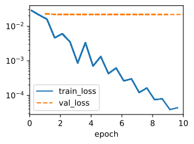
3.7.3.4 Using Weight Decay
Below, we run with substantial weight decay. Note that the training error increases but the validation error decreases. This is precisely the effect we expect from regularization.
train_scratch(3)L2 norm of w: 0.0017270983662456274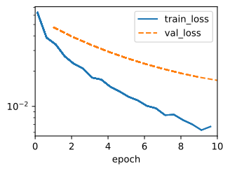
3.7.4 Concise Implementation
Because weight decay is ubiquitous in neural network optimization, the deep learning framework makes it especially convenient, integrating weight decay into the optimization algorithm itself for easy use in combination with any loss function. Moreover, this integration serves a computational benefit, allowing implementation tricks to add weight decay to the algorithm, without any additional computational overhead. Since the weight decay portion of the update depends only on the current value of each parameter, the optimizer must touch each parameter once anyway.
Below, we specify the weight decay hyperparameter directly through weight_decay when instantiating our optimizer. By default, PyTorch decays both weights and biases simultaneously, but we can configure the optimizer to handle different parameters according to different policies. Here, we only set weight_decay for the weights (the net.weight parameters), hence the bias (the net.bias parameter) will not decay.
class WeightDecay(d2l.LinearRegression):
def __init__(self, wd, lr):
super().__init__(lr)
self.save_hyperparameters()
self.wd = wd
def configure_optimizers(self):
return torch.optim.SGD([
{'params': self.net.weight, 'weight_decay': self.wd},
{'params': self.net.bias}], lr=self.lr)The plot looks similar to that when we implemented weight decay from scratch. However, this version runs faster and is easier to implement, benefits that will become more pronounced as you address larger problems and this work becomes more routine.
model = WeightDecay(wd=3, lr=0.01)
model.board.yscale='log'
trainer.fit(model, data)
print('L2 norm of w:', float(l2_penalty(model.get_w_b()[0])))L2 norm of w: 0.013779522851109505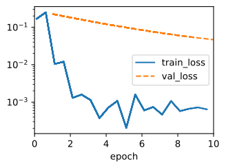
So far, we have touched upon one notion of what constitutes a simple linear function. However, even for simple nonlinear functions, the situation can be much more complex. To see this, the concept of reproducing kernel Hilbert space (RKHS) allows one to apply tools introduced for linear functions in a nonlinear context. Unfortunately, RKHS-based algorithms tend to scale poorly to large, high-dimensional data. In this book we will often adopt the common heuristic whereby weight decay is applied to all layers of a deep network.
3.7.5 Summary
Regularization is a common method for dealing with overfitting. Classical regularization techniques add a penalty term to the loss function (when training) to reduce the complexity of the learned model. One particular choice for keeping the model simple is using an penalty. This leads to weight decay in the update steps of the minibatch stochastic gradient descent algorithm. In practice, the weight decay functionality is provided in optimizers from deep learning frameworks. Different sets of parameters can have different update behaviors within the same training loop.
3.7.6 Exercises
Experiment with the value of in the estimation problem in this section. Plot training and validation accuracy as a function of . What do you observe?
Use a validation set to find the optimal value of . Is it really the optimal value? Does this matter?
What would the update equations look like if instead of we used as our penalty of choice ( regularization)?
We know that . Can you find a similar equation for matrices (see the Frobenius norm in Section 2.3.11)?
Review the relationship between training error and generalization error. In addition to weight decay, increased training, and the use of a model of suitable complexity, what other ways might help us deal with overfitting?
In Bayesian statistics we use the product of prior and likelihood to arrive at a posterior via . How can you identify with regularization?
O que mudou desde 2023 — atualização editorial
2.1 Como o PDF trata
O livro apresenta weight decay no contexto clássico:
- Equivale a penalidade L² no loss:
- Em SGD puro, isto gera a atualização
. - A intuição vendida é: menos capacidade efetiva → menor overfit, uma regularização no sentido clássico.
2.2 O que mudou desde 2023 🟡 parcialmente desatualizado
(a) A distinção L² × Weight-Decay virou essencial com Adam
O livro aplica L² sem distinguir de weight decay porque para SGD eles são idênticos. Em Adam, não são. Loshchilov & Hutter (arxiv:1711.05101) mostraram em 2019 que somar ao gradiente (o que é “L²”) é diferente de aplicar o decaimento diretamente no passo depois do update adaptativo. A versão correta chama-se AdamW (decoupled weight decay):
AdamW é o default de facto em transformers desde ~2019, e o livro nem o menciona. Qualquer código PyTorch sério hoje usa torch.optim.AdamW, e HuggingFace faz o mesmo.
🔴 Legado: usar optim.Adam com weight_decay=… em transformer/LLM. A implementação do PyTorch aplica a penalidade como L², degradando levemente o efeito esperado.
(b) O papel real do weight decay em LLMs é dinâmica, não regularização
Um dos trabalhos mais citados de 2024 é “Why Do We Need Weight Decay in Modern Deep Learning?” de Andriushchenko et al. (NeurIPS 2024, paper, código). A tese central contraria frontalmente a narrativa clássica do livro:
“Weight decay is never useful as an explicit regularizer but instead changes the training dynamics in a desirable way.”
Dois mecanismos distintos:
- Em visão (multi-época, sobre-treino) – weight decay amplifica o ruído implícito do SGD, que via seu implicit bias controla a norma do Jacobiano → melhor generalização. Não é o termo da penalidade em si, é a interação com a dinâmica.
- Em LLMs (1-época, regime de sub-treino) – weight decay balanceia bias-variance do próprio estimador estocástico, reduz training loss (não só test), e previne divergências repentinas em mixed precision bfloat16 — utilidade prática sine qua non, não regularização.
(c) λ muda conforme a escala do modelo
Wang et al. 2024 mostram que o λ ideal depende do número de passos de treino e do tamanho do modelo — a “regra” λ=0.01 que funciona para BERT não é a regra para um LLM 7B/70B. Hoje, λ ∈ [0.01, 0.1] é o corredor típico, frequentemente λ=0.1 em pretraining de LLMs.
(d) Weight decay não é aplicado a todos os parâmetros
Convenção universal em LLMs (adotada desde o GPT-2 e reforçada em LLaMA/Qwen/Mistral): bias e ganhos (γ) do LayerNorm/RMSNorm ficam fora do weight decay. O livro não fala disto. Em código típico:
no_decay = ["bias", "LayerNorm.weight", "norm.weight"]
optim_groups = [
{"params": [p for n,p in model.named_parameters() if not any(nd in n for nd in no_decay)],
"weight_decay": 0.1},
{"params": [p for n,p in model.named_parameters() if any(nd in n for nd in no_decay)],
"weight_decay": 0.0},
]2.3 Discrepâncias com o PDF
| Ponto do PDF | Estado em 2026 |
|---|---|
| “weight decay é regularização L²” | Só verdade em SGD puro. 🟡 |
| Adam + weight_decay (fórmula implícita) | Substituir por AdamW. 🔴 |
| Intuição: λ controla capacidade | Mecanismo real é dinâmico (estabiliza o training), sobretudo em bf16. |
| Aplicar λ uniformemente | Excluir bias e norm weights é padrão. |
Capítulo 2 — §5.5 Generalization in Deep Learning
Texto-base (Dive into Deep Learning)
In Section 3 and Section 4, we tackled regression and classification problems by fitting linear models to training data. In both cases, we provided practical algorithms for finding the parameters that maximized the likelihood of the observed training labels. And then, towards the end of each chapter, we recalled that fitting the training data was only an intermediate goal. Our real quest all along was to discover general patterns on the basis of which we can make accurate predictions even on new examples drawn from the same underlying population. Machine learning researchers are consumers of optimization algorithms. Sometimes, we must even develop new optimization algorithms. But at the end of the day, optimization is merely a means to an end. At its core, machine learning is a statistical discipline and we wish to optimize training loss only insofar as some statistical principle (known or unknown) leads the resulting models to generalize beyond the training set.
On the bright side, it turns out that deep neural networks trained by stochastic gradient descent generalize remarkably well across myriad prediction problems, spanning computer vision; natural language processing; time series data; recommender systems; electronic health records; protein folding; value function approximation in video games and board games; and numerous other domains. On the downside, if you were looking for a straightforward account of either the optimization story (why we can fit them to training data) or the generalization story (why the resulting models generalize to unseen examples), then you might want to pour yourself a drink. While our procedures for optimizing linear models and the statistical properties of the solutions are both described well by a comprehensive body of theory, our understanding of deep learning still resembles the wild west on both fronts.
Both the theory and practice of deep learning are rapidly evolving, with theorists adopting new strategies to explain what’s going on, even as practitioners continue to innovate at a blistering pace, building arsenals of heuristics for training deep networks and a body of intuitions and folk knowledge that provide guidance for deciding which techniques to apply in which situations.
The summary of the present moment is that the theory of deep learning has produced promising lines of attack and scattered fascinating results, but still appears far from a comprehensive account of both (i) why we are able to optimize neural networks and (ii) how models learned by gradient descent manage to generalize so well, even on high-dimensional tasks. However, in practice, (i) is seldom a problem (we can always find parameters that will fit all of our training data) and thus understanding generalization is far the bigger problem. On the other hand, even absent the comfort of a coherent scientific theory, practitioners have developed a large collection of techniques that may help you to produce models that generalize well in practice. While no pithy summary can possibly do justice to the vast topic of generalization in deep learning, and while the overall state of research is far from resolved, we hope, in this section, to present a broad overview of the state of research and practice.
5.5.1 Revisiting Overfitting and Regularization
According to the “no free lunch” theorem of Wolpert and Macready (1995), any learning algorithm generalizes better on data with certain distributions, and worse with other distributions. Thus, given a finite training set, a model relies on certain assumptions: to achieve human-level performance it may be useful to identify inductive biases that reflect how humans think about the world. Such inductive biases show preferences for solutions with certain properties. For example, a deep MLP has an inductive bias towards building up a complicated function by the composition of simpler functions.
With machine learning models encoding inductive biases, our approach to training them typically consists of two phases: (i) fit the training data; and (ii) estimate the generalization error (the true error on the underlying population) by evaluating the model on holdout data. The difference between our fit on the training data and our fit on the test data is called the generalization gap and when this is large, we say that our models overfit to the training data. In extreme cases of overfitting, we might exactly fit the training data, even when the test error remains significant. And in the classical view, the interpretation is that our models are too complex, requiring that we either shrink the number of features, the number of nonzero parameters learned, or the size of the parameters as quantified. Recall the plot of model complexity compared with loss (Fig. 3.6.1) from Section 3.6.
However deep learning complicates this picture in counterintuitive ways. First, for classification problems, our models are typically expressive enough to perfectly fit every training example, even in datasets consisting of millions (Zhang et al. , 2021). In the classical picture, we might think that this setting lies on the far right extreme of the model complexity axis, and that any improvements in generalization error must come by way of regularization, either by reducing the complexity of the model class, or by applying a penalty, severely constraining the set of values that our parameters might take. But that is where things start to get weird.
Strangely, for many deep learning tasks (e.g., image recognition and text classification) we are typically choosing among model architectures, all of which can achieve arbitrarily low training loss (and zero training error). Because all models under consideration achieve zero training error, the only avenue for further gains is to reduce overfitting. Even stranger, it is often the case that despite fitting the training data perfectly, we can actually reduce the generalization error further by making the model even more expressive, e.g., adding layers, nodes, or training for a larger number of epochs. Stranger yet, the pattern relating the generalization gap to the complexity of the model (as captured, for example, in the depth or width of the networks) can be non-monotonic, with greater complexity hurting at first but subsequently helping in a so-called “double-descent” pattern (Nakkiran et al. , 2021). Thus the deep learning practitioner possesses a bag of tricks, some of which seemingly restrict the model in some fashion and others that seemingly make it even more expressive, and all of which, in some sense, are applied to mitigate overfitting.
Complicating things even further, while the guarantees provided by classical learning theory can be conservative even for classical models, they appear powerless to explain why it is that deep neural networks generalize in the first place. Because deep neural networks are capable of fitting arbitrary labels even for large datasets, and despite the use of familiar methods such as regularization, traditional complexity-based generalization bounds, e.g., those based on the VC dimension or Rademacher complexity of a hypothesis class cannot explain why neural networks generalize.
5.5.2 Inspiration from Nonparametrics
Approaching deep learning for the first time, it is tempting to think of them as parametric models. After all, the models do have millions of parameters. When we update the models, we update their parameters. When we save the models, we write their parameters to disk. However, mathematics and computer science are riddled with counterintuitive changes of perspective, and surprising isomorphisms between seemingly different problems. While neural networks clearly have parameters, in some ways it can be more fruitful to think of them as behaving like nonparametric models. So what precisely makes a model nonparametric? While the name covers a diverse set of approaches, one common theme is that nonparametric methods tend to have a level of complexity that grows as the amount of available data grows.
Perhaps the simplest example of a nonparametric model is the -nearest neighbor algorithm (we will cover more nonparametric models later, for example in Section 11.2). Here, at training time, the learner simply memorizes the dataset. Then, at prediction time, when confronted with a new point , the learner looks up the nearest neighbors (the points that minimize some distance ). When , this algorithm is called -nearest neighbors, and the algorithm will always achieve a training error of zero. That however, does not mean that the algorithm will not generalize. In fact, it turns out that under some mild conditions, the 1-nearest neighbor algorithm is consistent (eventually converging to the optimal predictor).
Note that -nearest neighbor requires that we specify some distance function , or equivalently, that we specify some vector-valued basis function for featurizing our data. For any choice of the distance metric, we will achieve zero training error and eventually reach an optimal predictor, but different distance metrics encode different inductive biases and with a finite amount of available data will yield different predictors. Different choices of the distance metric represent different assumptions about the underlying patterns and the performance of the different predictors will depend on how compatible the assumptions are with the observed data.
In a sense, because neural networks are over-parametrized, possessing many more parameters than are needed to fit the training data, they tend to interpolate the training data (fitting it perfectly) and thus behave, in some ways, more like nonparametric models. More recent theoretical research has established deep connection between large neural networks and nonparametric methods, notably kernel methods. In particular, Jacot et al. (2018) demonstrated that in the limit, as multilayer perceptrons with randomly initialized weights grow infinitely wide, they become equivalent to (nonparametric) kernel methods for a specific choice of the kernel function (essentially, a distance function), which they call the neural tangent kernel. While current neural tangent kernel models may not fully explain the behavior of modern deep networks, their success as an analytical tool underscores the usefulness of nonparametric modeling for understanding the behavior of over-parametrized deep networks.
5.5.3 Early Stopping
While deep neural networks are capable of fitting arbitrary labels, even when labels are assigned incorrectly or randomly (Zhang et al. , 2021), this capability only emerges over many iterations of training. A new line of work (Rolnick et al. , 2017) has revealed that in the setting of label noise, neural networks tend to fit cleanly labeled data first and only subsequently to interpolate the mislabeled data. Moreover, it has been established that this phenomenon translates directly into a guarantee on generalization: whenever a model has fitted the cleanly labeled data but not randomly labeled examples included in the training set, it has in fact generalized (Garg et al. , 2021).
Together these findings help to motivate early stopping, a classic technique for regularizing deep neural networks. Here, rather than directly constraining the values of the weights, one constrains the number of epochs of training. The most common way to determine the stopping criterion is to monitor validation error throughout training (typically by checking once after each epoch) and to cut off training when the validation error has not decreased by more than some small amount for some number of epochs. This is sometimes called a patience criterion. As well as the potential to lead to better generalization in the setting of noisy labels, another benefit of early stopping is the time saved. Once the patience criterion is met, one can terminate training. For large models that might require days of training simultaneously across eight or more GPUs, well-tuned early stopping can save researchers days of time and can save their employers many thousands of dollars.
Notably, when there is no label noise and datasets are realizable (the classes are truly separable, e.g., distinguishing cats from dogs), early stopping tends not to lead to significant improvements in generalization. On the other hand, when there is label noise, or intrinsic variability in the label (e.g., predicting mortality among patients), early stopping is crucial. Training models until they interpolate noisy data is typically a bad idea.
5.5.4 Classical Regularization Methods for Deep Networks
In Section 3, we described several classical regularization techniques for constraining the complexity of our models. In particular, Section 3.7 introduced a method called weight decay, which consists of adding a regularization term to the loss function in order to penalize large values of the weights. Depending on which weight norm is penalized this technique is known either as ridge regularization (for penalty) or lasso regularization (for an penalty). In the classical analysis of these regularizers, they are considered as sufficiently restrictive on the values that the weights can take to prevent the model from fitting arbitrary labels.
In deep learning implementations, weight decay remains a popular tool. However, researchers have noted that typical strengths of regularization are insufficient to prevent the networks from interpolating the data (Zhang et al. , 2021) and thus the benefits if interpreted as regularization might only make sense in combination with the early stopping criterion. Absent early stopping, it is possible that just like the number of layers or number of nodes (in deep learning) or the distance metric (in 1-nearest neighbor), these methods may lead to better generalization not because they meaningfully constrain the power of the neural network but rather because they somehow encode inductive biases that are better compatible with the patterns found in datasets of interests. Thus, classical regularizers remain popular in deep learning implementations, even if the theoretical rationale for their efficacy may be radically different.
Notably, deep learning researchers have also built on techniques first popularized in classical regularization contexts, such as adding noise to model inputs. In the next section we will introduce the famous dropout technique (invented by Srivastava et al. (2014)), which has become a mainstay of deep learning, even as the theoretical basis for its efficacy remains similarly mysterious.
5.5.5 Summary
Unlike classical linear models, which tend to have fewer parameters than examples, deep networks tend to be over-parametrized, and for most tasks are capable of perfectly fitting the training set. This interpolation regime challenges many hard fast-held intuitions. Functionally, neural networks look like parametric models. But thinking of them as nonparametric models can sometimes be a more reliable source of intuition. Because it is often the case that all deep networks under consideration are capable of fitting all of the training labels, nearly all gains must come by mitigating overfitting (closing the generalization gap). Paradoxically, the interventions that reduce the generalization gap sometimes appear to increase model complexity and at other times appear to decrease complexity. However, these methods seldom decrease complexity sufficiently for classical theory to explain the generalization of deep networks, and why certain choices lead to improved generalization remains for the most part a massive open question despite the concerted efforts of many brilliant researchers.
5.5.6 Exercises
In what sense do traditional complexity-based measures fail to account for generalization of deep neural networks?
Why might early stopping be considered a regularization technique?
How do researchers typically determine the stopping criterion?
What important factor seems to differentiate cases when early stopping leads to big improvements in generalization?
Beyond generalization, describe another benefit of early stopping.
O que mudou desde 2023 — atualização editorial
3.1 Como o PDF trata
O capítulo 5.5 discute: - overfitting revisitado com redes profundas, - insights de não-paramétrica (k-NN), - early stopping como regularizador clássico, - menciona penalidades de norma, que já aparecem no cap. 3.7.
3.2 O que mudou desde 2023 🟡
Três fenômenos redefiniram o que significa “generalizar” em redes profundas. Nenhum aparece no PDF.
(a) Double descent — a curva U foi substituída
Desde Nakkiran et al. (2019) sabemos que, ao aumentar capacidade do modelo, o erro de teste segue uma curva não-monotônica: sobe perto do interpolation threshold (onde N_params ≈ N_dados) e depois cai de novo, indo para regimes sobreparametrizados.
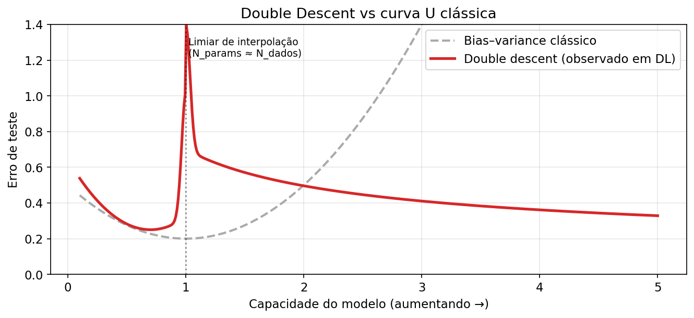
Consequência didática: a heurística clássica “adicione parâmetros até overfittar” do livro está certa apenas no ramo esquerdo da curva. Modelos modernos operam deliberadamente à direita do pico.
🟡 Atualização: o livro menciona que redes muito grandes podem generalizar — mas não dá nome ao fenômeno nem explicita a curva. Referência canônica: Nakkiran et al., OpenReview, The Simple Truth of Double Descent (2024).
(b) Grokking — generalização tardia
Power et al. (2022), depois aprofundado até 2025, observaram que em tarefas algorítmicas redes atingem 100% de acurácia de treino rapidamente, validação fica no chute por ~10⁴–10⁶ passos, e então — de repente — a validação sobe para 100%. É o grokking.
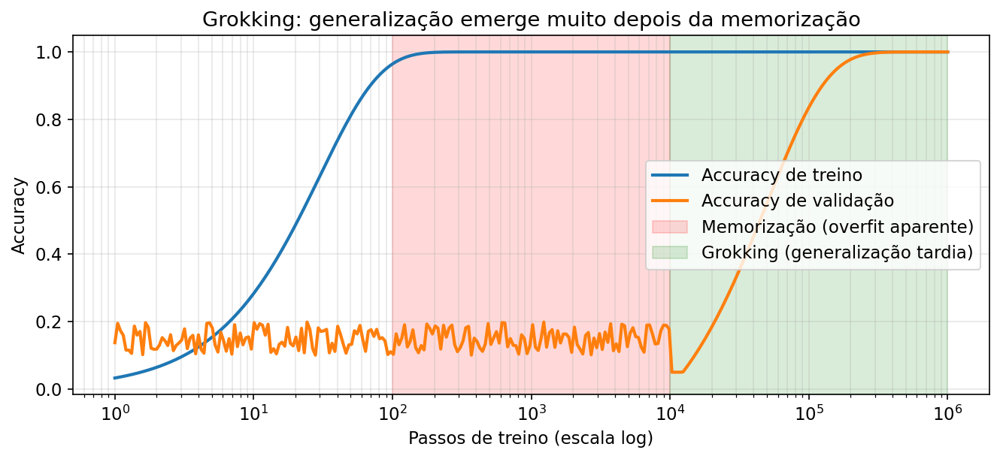
O que faz o salto acontecer? Três linhas de explicação que convergiram entre 2023-2025: - Eficiência de circuito: quando várias sub-redes atingem loss de treino baixo, weight decay prefere a mais “eficiente” em norma, e esta tende a ser a que generaliza — Nanda et al., Explaining grokking through circuit efficiency. - Transição lazy → rich: o modelo começa no regime NTK/lazy (features fixas), e só depois passa para o regime rich onde aprende representações — Lyle, 2025. - Minimização de rank: queda da val loss coincide com descoberta de pesos de rank baixo (OpenReview).
Implicação prática: cross-validation ingênua, como descrita no livro, pode te dizer “não está generalizando” quando na verdade falta paciência de treino + weight decay suficiente.
(c) Edge of Stability
Cohen et al. (2021) e várias continuações (2023–2025) mostraram que redes grandes treinadas com gradiente descendo (não estocástico) operam no regime de Edge of Stability (EoS): o maior autovalor do Hessiano sobe até ~ e oscila nesse limite — não converge a um mínimo “bom” no sentido clássico. Em SGD, o análogo é que em mínimos lineares-estáveis (Wu & Su, ICML 2023). Consequência: taxas de aprendizado maiores do que as que o livro recomendaria como “seguras” são precisamente as que produzem boa generalização, porque o ruído implícito do SGD exerce regularização espontânea.
(d) Sharpness-Aware Minimization (SAM) e variantes
Foret et al. (2021) propuseram SAM — um otimizador que minimiza o loss na vizinhança dos parâmetros, não só no ponto, procurando mínimos “planos” (correlacionados com melhor generalização). Em 2024 apareceram variantes importantes: - F-SAM (Friendly SAM) — Li et al., CVPR 2024 - Lookahead-SAM — Yu et al., ICML 2024 - MNSAM (momentum-accelerated SAM) — ScienceDirect 2025
Limitação: SAM dobra o custo por passo (duas passagens forward/backward). Em CV ainda compensa; em LLMs o custo inviabiliza na escala de trilhões de parâmetros.
(e) Scaling laws como lente de generalização
Chinchilla (Hoffmann et al., 2022) formalizou que para o mínimo compute-optimal, o número de tokens deve crescer proporcionalmente ao número de parâmetros. Regra prática citada na época: ~20 tokens por parâmetro. Em 2024-2025 isto evoluiu:
- Com inferência massiva, vale treinar mais tempo em um modelo menor que Chinchilla-optimal (Sardana et al. 2024).
- Modelos atuais (LLaMA 3.1, Qwen3, Mistral) usam razões 100–60 000:1 (Qwen3-0.6B treinou com 60 000 tokens/parâmetro — record em 2025).
- Farseer (2024) refina a predição da lei de escala com erro 4× menor que Chinchilla em grande escala (paper).
3.3 Discrepâncias com o PDF
| Ponto do PDF | Estado em 2026 |
|---|---|
| Curva U clássica do bias-variance | Substituída por double descent para redes profundas. 🔴 |
| Early stopping como ferramenta principal | Ainda válido para fine-tuning. 🟡 mas em pretraining é impraticável. |
| Regularização = controle de capacidade | Regularização em LLMs é majoritariamente implícita (SGD noise, weight decay dinâmico). 🟡 |
| Sem menção a grokking / EoS / scaling laws | Adicionar estes três é essencial para intuição atual. |
Capítulo 3 — §5.6 Dropout
Texto-base (Dive into Deep Learning)
Let’s think briefly about what we expect from a good predictive model. We want it to peform well on unseen data. Classical generalization theory suggests that to close the gap between train and test performance, we should aim for a simple model. Simplicity can come in the form of a small number of dimensions. We explored this when discussing the monomial basis functions of linear models in Section 3.6. Additionally, as we saw when discussing weight decay ( regularization) in Section 3.7, the (inverse) norm of the parameters also represents a useful measure of simplicity. Another useful notion of simplicity is smoothness, i.e., that the function should not be sensitive to small changes to its inputs. For instance, when we classify images, we would expect that adding some random noise to the pixels should be mostly harmless.
Bishop (1995) formalized this idea when he proved that training with input noise is equivalent to Tikhonov regularization. This work drew a clear mathematical connection between the requirement that a function be smooth (and thus simple), and the requirement that it be resilient to perturbations in the input.
Then, Srivastava et al. (2014) developed a clever idea for how to apply Bishop’s idea to the internal layers of a network, too. Their idea, called dropout, involves injecting noise while computing each internal layer during forward propagation, and it has become a standard technique for training neural networks. The method is called dropout because we literally drop out some neurons during training. Throughout training, on each iteration, standard dropout consists of zeroing out some fraction of the nodes in each layer before calculating the subsequent layer.
To be clear, we are imposing our own narrative with the link to Bishop. The original paper on dropout offers intuition through a surprising analogy to sexual reproduction. The authors argue that neural network overfitting is characterized by a state in which each layer relies on a specific pattern of activations in the previous layer, calling this condition co-adaptation. Dropout, they claim, breaks up co-adaptation just as sexual reproduction is argued to break up co-adapted genes. While such an justification of this theory is certainly up for debate, the dropout technique itself has proved enduring, and various forms of dropout are implemented in most deep learning libraries.
The key challenge is how to inject this noise. One idea is to inject it in an unbiased manner so that the expected value of each layer—while fixing the others—equals the value it would have taken absent noise. In Bishop’s work, he added Gaussian noise to the inputs to a linear model. At each training iteration, he added noise sampled from a distribution with mean zero to the input , yielding a perturbed point . In expectation, .
In standard dropout regularization, one zeros out some fraction of the nodes in each layer and then debiases each layer by normalizing by the fraction of nodes that were retained (not dropped out). In other words, with dropout probability , each intermediate activation is replaced by a random variable as follows:
By design, the expectation remains unchanged, i.e., .
import torch
from torch import nn
from d2l import torch as d2l5.6.1 Dropout in Practice
Recall the MLP with a hidden layer and five hidden units from Fig. 5.1.1. When we apply dropout to a hidden layer, zeroing out each hidden unit with probability , the result can be viewed as a network containing only a subset of the original neurons. In Fig. 5.6.1, and are removed. Consequently, the calculation of the outputs no longer depends on or and their respective gradient also vanishes when performing backpropagation. In this way, the calculation of the output layer cannot be overly dependent on any one element of .
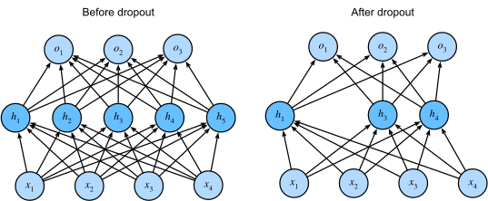
Fig. 5.6.1 MLP before and after dropout.
Typically, we disable dropout at test time. Given a trained model and a new example, we do not drop out any nodes and thus do not need to normalize. However, there are some exceptions: some researchers use dropout at test time as a heuristic for estimating the uncertainty of neural network predictions: if the predictions agree across many different dropout outputs, then we might say that the network is more confident.
5.6.2 Implementation from Scratch
To implement the dropout function for a single layer, we must draw as many samples from a Bernoulli (binary) random variable as our layer has dimensions, where the random variable takes value (keep) with probability and (drop) with probability . One easy way to implement this is to first draw samples from the uniform distribution . Then we can keep those nodes for which the corresponding sample is greater than , dropping the rest.
In the following code, we implement a dropout_layer function that drops out the elements in the tensor input X with probability dropout, rescaling the remainder as described above: dividing the survivors by 1.0-dropout.
def dropout_layer(X, dropout):
assert 0 <= dropout <= 1
if dropout == 1: return torch.zeros_like(X)
mask = (torch.rand(X.shape) > dropout).float()
return mask * X / (1.0 - dropout)We can test out the dropout_layer function on a few examples. In the following lines of code, we pass our input X through the dropout operation, with probabilities 0, 0.5, and 1, respectively.
X = torch.arange(16, dtype = torch.float32).reshape((2, 8))
print('dropout_p = 0:', dropout_layer(X, 0))
print('dropout_p = 0.5:', dropout_layer(X, 0.5))
print('dropout_p = 1:', dropout_layer(X, 1))dropout_p = 0: tensor([[ 0., 1., 2., 3., 4., 5., 6., 7.],
[ 8., 9., 10., 11., 12., 13., 14., 15.]])
dropout_p = 0.5: tensor([[ 0., 2., 0., 6., 8., 0., 0., 0.],
[16., 18., 20., 22., 24., 26., 28., 30.]])
dropout_p = 1: tensor([[0., 0., 0., 0., 0., 0., 0., 0.],
[0., 0., 0., 0., 0., 0., 0., 0.]])5.6.2.1 Defining the Model
The model below applies dropout to the output of each hidden layer (following the activation function). We can set dropout probabilities for each layer separately. A common choice is to set a lower dropout probability closer to the input layer. We ensure that dropout is only active during training.
class DropoutMLPScratch(d2l.Classifier):
def __init__(self, num_outputs, num_hiddens_1, num_hiddens_2,
dropout_1, dropout_2, lr):
super().__init__()
self.save_hyperparameters()
self.lin1 = nn.LazyLinear(num_hiddens_1)
self.lin2 = nn.LazyLinear(num_hiddens_2)
self.lin3 = nn.LazyLinear(num_outputs)
self.relu = nn.ReLU()
def forward(self, X):
H1 = self.relu(self.lin1(X.reshape((X.shape[0], -1))))
if self.training:
H1 = dropout_layer(H1, self.dropout_1)
H2 = self.relu(self.lin2(H1))
if self.training:
H2 = dropout_layer(H2, self.dropout_2)
return self.lin3(H2)5.6.2.2 Training
The following is similar to the training of MLPs described previously.
hparams = {'num_outputs':10, 'num_hiddens_1':256, 'num_hiddens_2':256,
'dropout_1':0.5, 'dropout_2':0.5, 'lr':0.1}
model = DropoutMLPScratch(**hparams)
data = d2l.FashionMNIST(batch_size=256)
trainer = d2l.Trainer(max_epochs=10)
trainer.fit(model, data)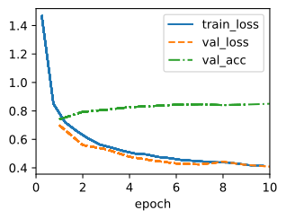
5.6.3 Concise Implementation
With high-level APIs, all we need to do is add a Dropout layer after each fully connected layer, passing in the dropout probability as the only argument to its constructor. During training, the Dropout layer will randomly drop out outputs of the previous layer (or equivalently, the inputs to the subsequent layer) according to the specified dropout probability. When not in training mode, the Dropout layer simply passes the data through during testing.
class DropoutMLP(d2l.Classifier):
def __init__(self, num_outputs, num_hiddens_1, num_hiddens_2,
dropout_1, dropout_2, lr):
super().__init__()
self.save_hyperparameters()
self.net = nn.Sequential(
nn.Flatten(), nn.LazyLinear(num_hiddens_1), nn.ReLU(),
nn.Dropout(dropout_1), nn.LazyLinear(num_hiddens_2), nn.ReLU(),
nn.Dropout(dropout_2), nn.LazyLinear(num_outputs))Next, we train the model.
model = DropoutMLP(**hparams)
trainer.fit(model, data)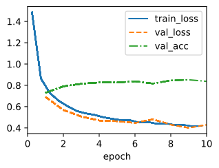
5.6.4 Summary
Beyond controlling the number of dimensions and the size of the weight vector, dropout is yet another tool for avoiding overfitting. Often tools are used jointly. Note that dropout is used only during training: it replaces an activation with a random variable with expected value .
5.6.5 Exercises
What happens if you change the dropout probabilities for the first and second layers? In particular, what happens if you switch the ones for both layers? Design an experiment to answer these questions, describe your results quantitatively, and summarize the qualitative takeaways.
Increase the number of epochs and compare the results obtained when using dropout with those when not using it.
What is the variance of the activations in each hidden layer when dropout is and is not applied? Draw a plot to show how this quantity evolves over time for both models.
Why is dropout not typically used at test time?
Using the model in this section as an example, compare the effects of using dropout and weight decay. What happens when dropout and weight decay are used at the same time? Are the results additive? Are there diminished returns (or worse)? Do they cancel each other out?
What happens if we apply dropout to the individual weights of the weight matrix rather than the activations?
Invent another technique for injecting random noise at each layer that is different from the standard dropout technique. Can you develop a method that outperforms dropout on the Fashion-MNIST dataset (for a fixed architecture)?
O que mudou desde 2023 — atualização editorial
4.1 Como o PDF trata
- Dropout “padrão” (inverted) com taxa aplicada a ativações durante o treino.
- Benefício: desacopla co-adaptações; aproximação bayesiana a um ensemble.
- Código do zero e versão concisa com
nn.Dropout. - Implicitamente trata dropout como prática universal.
4.2 O que mudou desde 2023 🔴 fortemente desatualizado para o regime LLM
(a) LLMs de ponta não usam dropout no pretraining
Olhe o código: - LLaMA 1/2/3 — dropout 0 em model.py (issue). - Pythia, OPT, GPT-NeoX, Mistral, Qwen2/3, DeepSeek-V3, Kimi K2 — também não.
Por quê? Pretraining de LLMs é feito em uma única passada pelos dados (ou menos). Não há “overfit” no sentido clássico porque o modelo jamais reencontra o mesmo exemplo. Isto foi sistematicamente testado em Kristensen et al. 2025, Drop Dropout on Single-Epoch Language Model Pretraining: remover dropout melhora perplexity, o modelo sem dropout é estatisticamente superior dado orçamento de passos suficiente.
Regra de bolso 2026: dropout=0.0 para pretraining de LLMs. Em fine-tuning em datasets pequenos, ~0.1 ainda é comum.
🔴 Legado: aplicar dropout=0.1 “por padrão” em um transformer grande sendo pré-treinado.
(b) Variações “estruturadas” que ainda são úteis
Dropout clássico quase desapareceu de pretraining LLM, mas suas variantes em nichos específicos continuam:
- Stochastic Depth / DropPath (Huang et al. 2016) — “dropar” blocos residuais inteiros. Universal em ViT/ConvNeXt/Swin. Não é aplicada a LLMs de bilhões de parâmetros, mas é padrão em redes de visão de 2022 em diante.
- LayerDrop (Fan et al. 2019) — baseline para pruning de profundidade em transformers. DropPEFT (2025) estendeu a ideia para federated fine-tuning de LLMs (arxiv 2503.10217).
- AttentionDrop (2025) — perturba a distribuição do softmax atencional durante o treino (arxiv 2504.12088).
- Residual Dropout (2024, ACL SIGUL) — dropout aplicado apenas nas conexões residuais, útil em fine-tuning de baixos recursos.
- DropBlock (2018) — ainda a escolha certa para CNNs (drop de regiões espacialmente contíguas).
(c) Attention dropout e residual dropout ainda vivem em alguns modelos
GPT-2 tinha attn_pdrop=0.1 e resid_pdrop=0.1. BERT tinha hidden_dropout_prob=0.1 e attention_probs_dropout_prob=0.1. Esses valores defaults ainda aparecem em código-base de LLMs open-source, mas os checkpoints pré-treinados reais de 2023–2026 são, quase sempre, rodados com p=0.0. O dropout só volta (e com p=0.1) em fine-tuning supervisionado em dataset pequeno.
4.3 Discrepâncias com o PDF
| Ponto do PDF | Estado em 2026 |
|---|---|
| Dropout como “regularizador-padrão” | Verdade em redes pequenas com múltiplas épocas. 🟡 |
| Mesma receita para NLP moderno | Não. LLMs usam p=0 em pretraining. 🔴 |
| Sem menção a DropPath / LayerDrop / AttentionDrop | Adicionar estas variantes. |
Capítulo 4 — §12.4 e §12.5 SGD e Minibatch SGD
Texto-base (Dive into Deep Learning)
12.4 Stochastic Gradient Descent
In earlier chapters we kept using stochastic gradient descent in our training procedure, however, without explaining why it works. To shed some light on it, we just described the basic principles of gradient descent in Section 12.3. In this section, we go on to discuss stochastic gradient descent in greater detail.
%matplotlib inline
import math
import torch
from d2l import torch as d2l12.4.1 Stochastic Gradient Updates
In deep learning, the objective function is usually the average of the loss functions for each example in the training dataset. Given a training dataset of examples, we assume that is the loss function with respect to the training example of index , where is the parameter vector. Then we arrive at the objective function
The gradient of the objective function at is computed as
If gradient descent is used, the computational cost for each independent variable iteration is , which grows linearly with . Therefore, when the training dataset is larger, the cost of gradient descent for each iteration will be higher.
Stochastic gradient descent (SGD) reduces computational cost at each iteration. At each iteration of stochastic gradient descent, we uniformly sample an index for data examples at random, and compute the gradient to update :
where is the learning rate. We can see that the computational cost for each iteration drops from of the gradient descent to the constant . Moreover, we want to emphasize that the stochastic gradient is an unbiased estimate of the full gradient because
This means that, on average, the stochastic gradient is a good estimate of the gradient.
Now, we will compare it with gradient descent by adding random noise with a mean of 0 and a variance of 1 to the gradient to simulate a stochastic gradient descent.
def f(x1, x2): # Objective function
return x1 ** 2 + 2 * x2 ** 2
def f_grad(x1, x2): # Gradient of the objective function
return 2 * x1, 4 * x2
def sgd(x1, x2, s1, s2, f_grad):
g1, g2 = f_grad(x1, x2)
# Simulate noisy gradient
g1 += torch.normal(0.0, 1, (1,)).item()
g2 += torch.normal(0.0, 1, (1,)).item()
eta_t = eta * lr()
return (x1 - eta_t * g1, x2 - eta_t * g2, 0, 0)
def constant_lr():
return 1
eta = 0.1
lr = constant_lr # Constant learning rate
d2l.show_trace_2d(f, d2l.train_2d(sgd, steps=50, f_grad=f_grad))epoch 50, x1: 0.225517, x2: -0.076646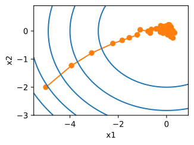
As we can see, the trajectory of the variables in the stochastic gradient descent is much more noisy than the one we observed in gradient descent in Section 12.3. This is due to the stochastic nature of the gradient. That is, even when we arrive near the minimum, we are still subject to the uncertainty injected by the instantaneous gradient via . Even after 50 steps the quality is still not so good. Even worse, it will not improve after additional steps (we encourage you to experiment with a larger number of steps to confirm this). This leaves us with the only alternative: change the learning rate . However, if we pick this too small, we will not make any meaningful progress initially. On the other hand, if we pick it too large, we will not get a good solution, as seen above. The only way to resolve these conflicting goals is to reduce the learning rate dynamically as optimization progresses.
This is also the reason for adding a learning rate function lr into the sgd step function. In the example above any functionality for learning rate scheduling lies dormant as we set the associated lr function to be constant.
12.4.2 Dynamic Learning Rate
Replacing with a time-dependent learning rate adds to the complexity of controlling convergence of an optimization algorithm. In particular, we need to figure out how rapidly should decay. If it is too quick, we will stop optimizing prematurely. If we decrease it too slowly, we waste too much time on optimization. The following are a few basic strategies that are used in adjusting over time (we will discuss more advanced strategies later):
In the first piecewise constant scenario we decrease the learning rate, e.g., whenever progress in optimization stalls. This is a common strategy for training deep networks. Alternatively we could decrease it much more aggressively by an exponential decay. Unfortunately this often leads to premature stopping before the algorithm has converged. A popular choice is polynomial decay with . In the case of convex optimization there are a number of proofs that show that this rate is well behaved.
Let’s see what the exponential decay looks like in practice.
def exponential_lr():
# Global variable that is defined outside this function and updated inside
global t
t += 1
return math.exp(-0.1 * t)
t = 1
lr = exponential_lr
d2l.show_trace_2d(f, d2l.train_2d(sgd, steps=1000, f_grad=f_grad))epoch 1000, x1: -0.758829, x2: -0.115584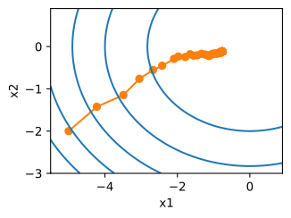
As expected, the variance in the parameters is significantly reduced. However, this comes at the expense of failing to converge to the optimal solution . Even after 1000 iteration steps are we are still very far away from the optimal solution. Indeed, the algorithm fails to converge at all. On the other hand, if we use a polynomial decay where the learning rate decays with the inverse square root of the number of steps, convergence gets better after only 50 steps.
def polynomial_lr():
# Global variable that is defined outside this function and updated inside
global t
t += 1
return (1 + 0.1 * t) ** (-0.5)
t = 1
lr = polynomial_lr
d2l.show_trace_2d(f, d2l.train_2d(sgd, steps=50, f_grad=f_grad))epoch 50, x1: 0.144834, x2: 0.041688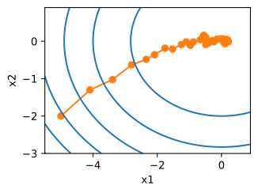
There exist many more choices for how to set the learning rate. For instance, we could start with a small rate, then rapidly ramp up and then decrease it again, albeit more slowly. We could even alternate between smaller and larger learning rates. There exists a large variety of such schedules. For now let’s focus on learning rate schedules for which a comprehensive theoretical analysis is possible, i.e., on learning rates in a convex setting. For general nonconvex problems it is very difficult to obtain meaningful convergence guarantees, since in general minimizing nonlinear nonconvex problems is NP hard. For a survey see e.g., the excellent lecture notes of Tibshirani 2015.
12.4.3 Convergence Analysis for Convex Objectives
The following convergence analysis of stochastic gradient descent for convex objective functions is optional and primarily serves to convey more intuition about the problem. We limit ourselves to one of the simplest proofs (Nesterov and Vial, 2000). Significantly more advanced proof techniques exist, e.g., whenever the objective function is particularly well behaved.
Suppose that the objective function is convex in for all . More concretely, we consider the stochastic gradient descent update:
where is the objective function with respect to the training example drawn from some distribution at step and is the model parameter. Denote by
the expected risk and by its minimum with regard to . Last let be the minimizer (we assume that it exists within the domain where is defined). In this case we can track the distance between the current parameter at time and the risk minimizer and see whether it improves over time:
We assume that the norm of stochastic gradient is bounded by some constant , hence we have that
We are mostly interested in how the distance between and changes in expectation. In fact, for any specific sequence of steps the distance might well increase, depending on whichever we encounter. Hence we need to bound the dot product. Since for any convex function it holds that for all and , by convexity we have
Plugging both inequalities (12.4.9) and (12.4.10) into (12.4.8) we obtain a bound on the distance between parameters at time as follows:
This means that we make progress as long as the difference between current loss and the optimal loss outweighs . Since this difference is bound to converge to zero it follows that the learning rate also needs to vanish.
Next we take expectations over (12.4.11). This yields
The last step involves summing over the inequalities for . Since the sum telescopes and by dropping the lower term we obtain
Note that we exploited that is given and thus the expectation can be dropped. Last define
Since
by Jensen’s inequality (setting , in (12.2.3)) and convexity of it follows that , thus
Plugging this into the inequality (12.4.13) yields the bound
where is a bound on the distance between the initial choice of parameters and the final outcome. In short, the speed of convergence depends on how the norm of stochastic gradient is bounded () and how far away from optimality the initial parameter value is (). Note that the bound is in terms of rather than . This is the case since is a smoothed version of the optimization path. Whenever , and are known we can pick the learning rate . This yields as upper bound . That is, we converge with rate to the optimal solution.
12.4.4 Stochastic Gradients and Finite Samples
So far we have played a bit fast and loose when it comes to talking about stochastic gradient descent. We posited that we draw instances , typically with labels from some distribution and that we use this to update the model parameters in some manner. In particular, for a finite sample size we simply argued that the discrete distribution for some functions and allows us to perform stochastic gradient descent over it.
However, this is not really what we did. In the toy examples in the current section we simply added noise to an otherwise non-stochastic gradient, i.e., we pretended to have pairs . It turns out that this is justified here (see the exercises for a detailed discussion). More troubling is that in all previous discussions we clearly did not do this. Instead we iterated over all instances exactly once. To see why this is preferable consider the converse, namely that we are sampling observations from the discrete distribution with replacement. The probability of choosing an element at random is . Thus to choose it at least once is
A similar reasoning shows that the probability of picking some sample (i.e., training example) exactly once is given by
Sampling with replacement leads to an increased variance and decreased data efficiency relative to sampling without replacement. Hence, in practice we perform the latter (and this is the default choice throughout this book). Last note that repeated passes through the training dataset traverse it in a different random order.
12.4.5 Summary
For convex problems we can prove that for a wide choice of learning rates stochastic gradient descent will converge to the optimal solution.
For deep learning this is generally not the case. However, the analysis of convex problems gives us useful insight into how to approach optimization, namely to reduce the learning rate progressively, albeit not too quickly.
Problems occur when the learning rate is too small or too large. In practice a suitable learning rate is often found only after multiple experiments.
When there are more examples in the training dataset, it costs more to compute each iteration for gradient descent, so stochastic gradient descent is preferred in these cases.
Optimality guarantees for stochastic gradient descent are in general not available in nonconvex cases since the number of local minima that require checking might well be exponential.
12.4.6 Exercises
Experiment with different learning rate schedules for stochastic gradient descent and with different numbers of iterations. In particular, plot the distance from the optimal solution as a function of the number of iterations.
Prove that for the function adding normal noise to the gradient is equivalent to minimizing a loss function where is drawn from a normal distribution.
Compare convergence of stochastic gradient descent when you sample from with replacement and when you sample without replacement.
How would you change the stochastic gradient descent solver if some gradient (or rather some coordinate associated with it) was consistently larger than all the other gradients?
Assume that . How many local minima does have? Can you change in such a way that to minimize it one needs to evaluate all the local minima?
12.5 Minibatch Stochastic Gradient Descent
So far we encountered two extremes in the approach to gradient-based learning: Section 12.3 uses the full dataset to compute gradients and to update parameters, one pass at a time. Conversely Section 12.4 processes one training example at a time to make progress. Either of them has its own drawbacks. Gradient descent is not particularly data efficient whenever data is very similar. Stochastic gradient descent is not particularly computationally efficient since CPUs and GPUs cannot exploit the full power of vectorization. This suggests that there might be something in between, and in fact, that is what we have been using so far in the examples we discussed.
12.5.1 Vectorization and Caches
At the heart of the decision to use minibatches is computational efficiency. This is most easily understood when considering parallelization to multiple GPUs and multiple servers. In this case we need to send at least one image to each GPU. With 8 GPUs per server and 16 servers we already arrive at a minibatch size no smaller than 128.
Things are a bit more subtle when it comes to single GPUs or even CPUs. These devices have multiple types of memory, often multiple types of computational units and different bandwidth constraints between them. For instance, a CPU has a small number of registers and then the L1, L2, and in some cases even L3 cache (which is shared among different processor cores). These caches are of increasing size and latency (and at the same time they are of decreasing bandwidth). Suffice to say, the processor is capable of performing many more operations than what the main memory interface is able to provide.
First, a 2GHz CPU with 16 cores and AVX-512 vectorization can process up to bytes per second. The capability of GPUs easily exceeds this number by a factor of 100. On the other hand, a midrange server processor might not have much more than 100 GB/s bandwidth, i.e., less than one tenth of what would be required to keep the processor fed. To make matters worse, not all memory access is created equal: memory interfaces are typically 64 bit wide or wider (e.g., on GPUs up to 384 bit), hence reading a single byte incurs the cost of a much wider access.
Second, there is significant overhead for the first access whereas sequential access is relatively cheap (this is often called a burst read). There are many more things to keep in mind, such as caching when we have multiple sockets, chiplets, and other structures. See this Wikipedia article for a more in-depth discussion.
The way to alleviate these constraints is to use a hierarchy of CPU caches that are actually fast enough to supply the processor with data. This is the driving force behind batching in deep learning. To keep matters simple, consider matrix-matrix multiplication, say . We have a number of options for calculating . For instance, we could try the following:
We could compute , i.e., we could compute it elementwise by means of dot products.
We could compute , i.e., we could compute it one column at a time. Likewise we could compute one row at a time.
We could simply compute .
We could break and into smaller block matrices and compute one block at a time.
If we follow the first option, we will need to copy one row and one column vector into the CPU each time we want to compute an element . Even worse, due to the fact that matrix elements are aligned sequentially we are thus required to access many disjoint locations for one of the two vectors as we read them from memory. The second option is much more favorable. In it, we are able to keep the column vector in the CPU cache while we keep on traversing through . This halves the memory bandwidth requirement with correspondingly faster access. Of course, option 3 is most desirable. Unfortunately, most matrices might not entirely fit into cache (this is what we are discussing after all). However, option 4 offers a practically useful alternative: we can move blocks of the matrix into cache and multiply them locally. Optimized libraries take care of this for us. Let’s have a look at how efficient these operations are in practice.
Beyond computational efficiency, the overhead introduced by Python and by the deep learning framework itself is considerable. Recall that each time we execute a command the Python interpreter sends a command to the MXNet engine which needs to insert it into the computational graph and deal with it during scheduling. Such overhead can be quite detrimental. In short, it is highly advisable to use vectorization (and matrices) whenever possible.
%matplotlib inline
import time
import numpy as np
import torch
from torch import nn
from d2l import torch as d2l
A = torch.zeros(256, 256)
B = torch.randn(256, 256)
C = torch.randn(256, 256)Since we will benchmark the running time frequently in the rest of the book, let’s define a timer.
class Timer: #@save
"""Record multiple running times."""
def __init__(self):
self.times = []
self.start()
def start(self):
"""Start the timer."""
self.tik = time.time()
def stop(self):
"""Stop the timer and record the time in a list."""
self.times.append(time.time() - self.tik)
return self.times[-1]
def avg(self):
"""Return the average time."""
return sum(self.times) / len(self.times)
def sum(self):
"""Return the sum of time."""
return sum(self.times)
def cumsum(self):
"""Return the accumulated time."""
return np.array(self.times).cumsum().tolist()
timer = Timer()Element-wise assignment simply iterates over all rows and columns of and respectively to assign the value to .
## Compute A = BC one element at a time
timer.start()
for i in range(256):
for j in range(256):
A[i, j] = torch.dot(B[i, :], C[:, j])
timer.stop()1.7845737934112549A faster strategy is to perform column-wise assignment.
## Compute A = BC one column at a time
timer.start()
for j in range(256):
A[:, j] = torch.mv(B, C[:, j])
timer.stop()0.06541275978088379Last, the most effective manner is to perform the entire operation in one block. Note that multiplying any two matrices and takes approximately floating point operations, when scalar multiplication and addition are counted as separate operations (fused in practice). Thus, multiplying two matrices takes billion floating point operations. Let’s see what the respective speed of the operations is.
## Compute A = BC in one go
timer.start()
A = torch.mm(B, C)
timer.stop()
gigaflops = [0.03 / i for i in timer.times]
print(f'performance in Gigaflops: element {gigaflops[0]:.3f}, '
f'column {gigaflops[1]:.3f}, full {gigaflops[2]:.3f}')performance in Gigaflops: element 0.017, column 0.459, full 51.63312.5.2 Minibatches
In the past we took it for granted that we would read minibatches of data rather than single observations to update parameters. We now give a brief justification for it. Processing single observations requires us to perform many single matrix-vector (or even vector-vector) multiplications, which is quite expensive and which incurs a significant overhead on behalf of the underlying deep learning framework. This applies both to evaluating a network when applied to data (often referred to as inference) and when computing gradients to update parameters. That is, this applies whenever we perform where
We can increase the computational efficiency of this operation by applying it to a minibatch of observations at a time. That is, we replace the gradient over a single observation by one over a small batch
Let’s see what this does to the statistical properties of : since both and also all elements of the minibatch are drawn uniformly at random from the training set, the expectation of the gradient remains unchanged. The variance, on the other hand, is reduced significantly. Since the minibatch gradient is composed of independent gradients which are being averaged, its standard deviation is reduced by a factor of . This, by itself, is a good thing, since it means that the updates are more reliably aligned with the full gradient.
Naively this would indicate that choosing a large minibatch would be universally desirable. Alas, after some point, the additional reduction in standard deviation is minimal when compared to the linear increase in computational cost. In practice we pick a minibatch that is large enough to offer good computational efficiency while still fitting into the memory of a GPU. To illustrate the savings let’s have a look at some code. In it we perform the same matrix-matrix multiplication, but this time broken up into “minibatches” of 64 columns at a time.
timer.start()
for j in range(0, 256, 64):
A[:, j:j+64] = torch.mm(B, C[:, j:j+64])
timer.stop()
print(f'performance in Gigaflops: block {0.03 / timer.times[3]:.3f}')performance in Gigaflops: block 37.640As we can see, the computation on the minibatch is essentially as efficient as on the full matrix. A word of caution is in order. In Section 8.5 we used a type of regularization that was heavily dependent on the amount of variance in a minibatch. As we increase the latter, the variance decreases and with it the benefit of the noise-injection due to batch normalization. See e.g., Ioffe (2017) for details on how to rescale and compute the appropriate terms.
12.5.3 Reading the Dataset
Let’s have a look at how minibatches are efficiently generated from data. In the following we use a dataset developed by NASA to test the wing noise from different aircraft to compare these optimization algorithms. For convenience we only use the first examples. The data is whitened for preprocessing, i.e., we remove the mean and rescale the variance to per coordinate.
#@save
d2l.DATA_HUB['airfoil'] = (d2l.DATA_URL + 'airfoil_self_noise.dat',
'76e5be1548fd8222e5074cf0faae75edff8cf93f')
#@save
def get_data_ch11(batch_size=10, n=1500):
data = np.genfromtxt(d2l.download('airfoil'),
dtype=np.float32, delimiter='\t')
data = torch.from_numpy((data - data.mean(axis=0)) / data.std(axis=0))
data_iter = d2l.load_array((data[:n, :-1], data[:n, -1]),
batch_size, is_train=True)
return data_iter, data.shape[1]-112.5.4 Implementation from Scratch
Recall the minibatch stochastic gradient descent implementation from Section 3.4. In the following we provide a slightly more general implementation. For convenience it has the same call signature as the other optimization algorithms introduced later in this chapter. Specifically, we add the status input states and place the hyperparameter in dictionary hyperparams. In addition, we will average the loss of each minibatch example in the training function, so the gradient in the optimization algorithm does not need to be divided by the batch size.
def sgd(params, states, hyperparams):
for p in params:
p.data.sub_(hyperparams['lr'] * p.grad)
p.grad.data.zero_()Next, we implement a generic training function to facilitate the use of the other optimization algorithms introduced later in this chapter. It initializes a linear regression model and can be used to train the model with minibatch stochastic gradient descent and other algorithms introduced subsequently.
#@save
def train_ch11(trainer_fn, states, hyperparams, data_iter,
feature_dim, num_epochs=2):
# Initialization
w = torch.normal(mean=0.0, std=0.01, size=(feature_dim, 1),
requires_grad=True)
b = torch.zeros((1), requires_grad=True)
net, loss = lambda X: d2l.linreg(X, w, b), d2l.squared_loss
# Train
animator = d2l.Animator(xlabel='epoch', ylabel='loss',
xlim=[0, num_epochs], ylim=[0.22, 0.35])
n, timer = 0, d2l.Timer()
for _ in range(num_epochs):
for X, y in data_iter:
l = loss(net(X), y).mean()
l.backward()
trainer_fn([w, b], states, hyperparams)
n += X.shape[0]
if n % 200 == 0:
timer.stop()
animator.add(n/X.shape[0]/len(data_iter),
(d2l.evaluate_loss(net, data_iter, loss),))
timer.start()
print(f'loss: {animator.Y[0][-1]:.3f}, {timer.sum()/num_epochs:.3f} sec/epoch')
return timer.cumsum(), animator.Y[0]Let’s see how optimization proceeds for batch gradient descent. This can be achieved by setting the minibatch size to 1500 (i.e., to the total number of examples). As a result the model parameters are updated only once per epoch. There is little progress. In fact, after 6 steps progress stalls.
def train_sgd(lr, batch_size, num_epochs=2):
data_iter, feature_dim = get_data_ch11(batch_size)
return train_ch11(
sgd, None, {'lr': lr}, data_iter, feature_dim, num_epochs)
gd_res = train_sgd(1, 1500, 10)loss: 0.247, 0.020 sec/epoch
When the batch size equals 1, we use stochastic gradient descent for optimization. For simplicity of implementation we picked a constant (albeit small) learning rate. In stochastic gradient descent, the model parameters are updated whenever an example is processed. In our case this amounts to 1500 updates per epoch. As we can see, the decline in the value of the objective function slows down after one epoch. Although both the procedures processed 1500 examples within one epoch, stochastic gradient descent consumes more time than gradient descent in our experiment. This is because stochastic gradient descent updated the parameters more frequently and since it is less efficient to process single observations one at a time.
sgd_res = train_sgd(0.005, 1)loss: 0.245, 0.685 sec/epoch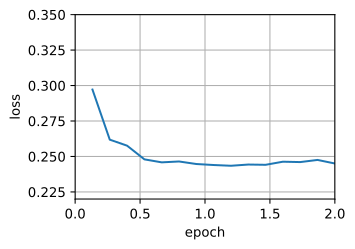
Finally, when the batch size equals 100, we use minibatch stochastic gradient descent for optimization. The time required per epoch is shorter than the time needed for stochastic gradient descent and the time for batch gradient descent.
mini1_res = train_sgd(.4, 100)loss: 0.246, 0.025 sec/epoch
Reducing the batch size to 10, the time for each epoch increases because the workload for each batch is less efficient to execute.
mini2_res = train_sgd(.05, 10)loss: 0.246, 0.090 sec/epoch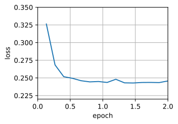
Now we can compare the time vs. loss for the previous four experiments. As can be seen, although stochastic gradient descent converges faster than GD in terms of number of examples processed, it uses more time to reach the same loss than GD because computing the gradient example by example is not as efficient. Minibatch stochastic gradient descent is able to trade-off convergence speed and computation efficiency. A minibatch size of 10 is more efficient than stochastic gradient descent; a minibatch size of 100 even outperforms GD in terms of runtime.
d2l.set_figsize([6, 3])
d2l.plot(*list(map(list, zip(gd_res, sgd_res, mini1_res, mini2_res))),
'time (sec)', 'loss', xlim=[1e-2, 10],
legend=['gd', 'sgd', 'batch size=100', 'batch size=10'])
d2l.plt.gca().set_xscale('log')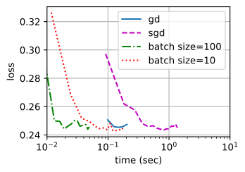
12.5.5 Concise Implementation
In Gluon, we can use the Trainer class to call optimization algorithms. This is used to implement a generic training function. We will use this throughout the current chapter.
#@save
def train_concise_ch11(trainer_fn, hyperparams, data_iter, num_epochs=4):
# Initialization
net = nn.Sequential(nn.Linear(5, 1))
def init_weights(module):
if type(module) == nn.Linear:
torch.nn.init.normal_(module.weight, std=0.01)
net.apply(init_weights)
optimizer = trainer_fn(net.parameters(), **hyperparams)
loss = nn.MSELoss(reduction='none')
animator = d2l.Animator(xlabel='epoch', ylabel='loss',
xlim=[0, num_epochs], ylim=[0.22, 0.35])
n, timer = 0, d2l.Timer()
for _ in range(num_epochs):
for X, y in data_iter:
optimizer.zero_grad()
out = net(X)
y = y.reshape(out.shape)
l = loss(out, y)
l.mean().backward()
optimizer.step()
n += X.shape[0]
if n % 200 == 0:
timer.stop()
# `MSELoss` computes squared error without the 1/2 factor
animator.add(n/X.shape[0]/len(data_iter),
(d2l.evaluate_loss(net, data_iter, loss) / 2,))
timer.start()
print(f'loss: {animator.Y[0][-1]:.3f}, {timer.sum()/num_epochs:.3f} sec/epoch')Using Gluon to repeat the last experiment shows identical behavior.
data_iter, _ = get_data_ch11(10)
trainer = torch.optim.SGD
train_concise_ch11(trainer, {'lr': 0.01}, data_iter)loss: 0.243, 0.096 sec/epoch
12.5.6 Summary
Vectorization makes code more efficient due to reduced overhead arising from the deep learning framework and due to better memory locality and caching on CPUs and GPUs.
There is a trade-off between statistical efficiency arising from stochastic gradient descent and computational efficiency arising from processing large batches of data at a time.
Minibatch stochastic gradient descent offers the best of both worlds: computational and statistical efficiency.
In minibatch stochastic gradient descent we process batches of data obtained by a random permutation of the training data (i.e., each observation is processed only once per epoch, albeit in random order).
It is advisable to decay the learning rates during training.
In general, minibatch stochastic gradient descent is faster than stochastic gradient descent and gradient descent for convergence to a smaller risk, when measured in terms of clock time.
12.5.7 Exercises
Modify the batch size and learning rate and observe the rate of decline for the value of the objective function and the time consumed in each epoch.
Read the MXNet documentation and use the
Trainerclassset_learning_ratefunction to reduce the learning rate of the minibatch stochastic gradient descent to 1/10 of its previous value after each epoch.Compare minibatch stochastic gradient descent with a variant that actually samples with replacement from the training set. What happens?
An evil genie replicates your dataset without telling you (i.e., each observation occurs twice and your dataset grows to twice its original size, but nobody told you). How does the behavior of stochastic gradient descent, minibatch stochastic gradient descent and that of gradient descent change?
O que mudou desde 2023 — atualização editorial
5.1 Como o PDF trata
- Atualização com decrescente.
- Análise de convergência para objetivo convexo, .
- Minibatch: vetorização e caches, discussão empírica de velocidade.
5.2 O que mudou desde 2023 🟢 majoritariamente válido
Esta parte envelheceu bem. Três refinamentos importantes:
(a) Regra de scaling de LR com batch size
O livro menciona vagamente que aumentar batch permite aumentar LR. Em 2024 a comunidade consolidou:
- Linear scaling (Goyal et al. 2017): para SGD puro em CV, . Ainda funciona.
- Square-root scaling para Adam/AdamW: — esta é a regra relevante em LLM training (Malladi, Princeton Blog 2024).
- Surge phenomenon (NeurIPS 2024, paper): a LR ótima sobe e depois cai conforme batch cresce; o ponto de “pico” se move para batches maiores ao longo do treino.
(b) SGD ainda reina em parte da visão computacional
Em CV (ResNet, ConvNeXt), SGD + momentum + Nesterov com cosine decay frequentemente generaliza melhor que Adam em top-1 accuracy — um fato empírico que o PDF não discute mas a comunidade aceita. Adam é o default em NLP; SGD em ImageNet/CIFAR competitivos.
(c) Implicit bias do SGD — peça-chave teórica
Ver §3.2(c) (Edge of Stability). A lição pragmática: SGD com batch pequeno e LR grande injeta ruído gradiente que atua como regularização — este ruído é estruturado (no subespaço dos gradientes por exemplo), não isotrópico, e essa estrutura é o que gera benefício (arxiv 2305.17490).
5.3 Discrepâncias
Poucas. A base conceitual do PDF continua sólida. Adicionar: - as regras concretas de scaling de LR, - que batch grandes (>1M tokens) são hoje padrão em LLMs (Llama-3 70B usou 4M tokens), - o conceito de implicit regularization via SGD noise.
Capítulo 5 — §12.6 Momentum
Texto-base (Dive into Deep Learning)
In Section 12.4 we reviewed what happens when performing stochastic gradient descent, i.e., when performing optimization where only a noisy variant of the gradient is available. In particular, we noticed that for noisy gradients we need to be extra cautious when it comes to choosing the learning rate in the face of noise. If we decrease it too rapidly, convergence stalls. If we are too lenient, we fail to converge to a good enough solution since noise keeps on driving us away from optimality.
12.6.1 Basics
In this section, we will explore more effective optimization algorithms, especially for certain types of optimization problems that are common in practice.
12.6.1.1 Leaky Averages
The previous section saw us discussing minibatch SGD as a means for accelerating computation. It also had the nice side-effect that averaging gradients reduced the amount of variance. The minibatch stochastic gradient descent can be calculated by:
To keep the notation simple, here we used as the stochastic gradient descent for sample using the weights updated at time . It would be nice if we could benefit from the effect of variance reduction even beyond averaging gradients on a minibatch. One option to accomplish this task is to replace the gradient computation by a “leaky average”:
for some . This effectively replaces the instantaneous gradient by one that is been averaged over multiple past gradients. is called velocity. It accumulates past gradients similar to how a heavy ball rolling down the objective function landscape integrates over past forces. To see what is happening in more detail let’s expand recursively into
Large amounts to a long-range average, whereas small amounts to only a slight correction relative to a gradient method. The new gradient replacement no longer points into the direction of steepest descent on a particular instance any longer but rather in the direction of a weighted average of past gradients. This allows us to realize most of the benefits of averaging over a batch without the cost of actually computing the gradients on it. We will revisit this averaging procedure in more detail later.
The above reasoning formed the basis for what is now known as accelerated gradient methods, such as gradients with momentum. They enjoy the additional benefit of being much more effective in cases where the optimization problem is ill-conditioned (i.e., where there are some directions where progress is much slower than in others, resembling a narrow canyon). Furthermore, they allow us to average over subsequent gradients to obtain more stable directions of descent. Indeed, the aspect of acceleration even for noise-free convex problems is one of the key reasons why momentum works and why it works so well.
As one would expect, due to its efficacy momentum is a well-studied subject in optimization for deep learning and beyond. See e.g., the beautiful expository article by Goh (2017) for an in-depth analysis and interactive animation. It was proposed by Polyak (1964). Nesterov (2018) has a detailed theoretical discussion in the context of convex optimization. Momentum in deep learning has been known to be beneficial for a long time. See e.g., the discussion by Sutskever et al. (2013) for details.
12.6.1.2 An Ill-conditioned Problem
To get a better understanding of the geometric properties of the momentum method we revisit gradient descent, albeit with a significantly less pleasant objective function. Recall that in Section 12.3 we used , i.e., a moderately distorted ellipsoid objective. We distort this function further by stretching it out in the direction via
As before has its minimum at . This function is very flat in the direction of . Let’s see what happens when we perform gradient descent as before on this new function. We pick a learning rate of .
%matplotlib inline
import torch
from d2l import torch as d2l
eta = 0.4
def f_2d(x1, x2):
return 0.1 * x1 ** 2 + 2 * x2 ** 2
def gd_2d(x1, x2, s1, s2):
return (x1 - eta * 0.2 * x1, x2 - eta * 4 * x2, 0, 0)
d2l.show_trace_2d(f_2d, d2l.train_2d(gd_2d))epoch 20, x1: -0.943467, x2: -0.000073
By construction, the gradient in the direction is much higher and changes much more rapidly than in the horizontal direction. Thus we are stuck between two undesirable choices: if we pick a small learning rate we ensure that the solution does not diverge in the direction but we are saddled with slow convergence in the direction. Conversely, with a large learning rate we progress rapidly in the direction but diverge in . The example below illustrates what happens even after a slight increase in learning rate from to . Convergence in the direction improves but the overall solution quality is much worse.
eta = 0.6
d2l.show_trace_2d(f_2d, d2l.train_2d(gd_2d))epoch 20, x1: -0.387814, x2: -1673.365109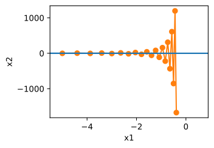
12.6.1.3 The Momentum Method
The momentum method allows us to solve the gradient descent problem described above. Looking at the optimization trace above we might intuit that averaging gradients over the past would work well. After all, in the direction this will aggregate well-aligned gradients, thus increasing the distance we cover with every step. Conversely, in the direction where gradients oscillate, an aggregate gradient will reduce step size due to oscillations that cancel each other out. Using instead of the gradient yields the following update equations:
Note that for we recover regular gradient descent. Before delving deeper into the mathematical properties let’s have a quick look at how the algorithm behaves in practice.
def momentum_2d(x1, x2, v1, v2):
v1 = beta * v1 + 0.2 * x1
v2 = beta * v2 + 4 * x2
return x1 - eta * v1, x2 - eta * v2, v1, v2
eta, beta = 0.6, 0.5
d2l.show_trace_2d(f_2d, d2l.train_2d(momentum_2d))epoch 20, x1: 0.007188, x2: 0.002553
As we can see, even with the same learning rate that we used before, momentum still converges well. Let’s see what happens when we decrease the momentum parameter. Halving it to leads to a trajectory that barely converges at all. Nonetheless, it is a lot better than without momentum (when the solution diverges).
eta, beta = 0.6, 0.25
d2l.show_trace_2d(f_2d, d2l.train_2d(momentum_2d))epoch 20, x1: -0.126340, x2: -0.186632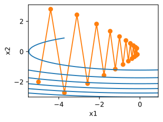
Note that we can combine momentum with stochastic gradient descent and in particular, minibatch stochastic gradient descent. The only change is that in that case we replace the gradients with . Last, for convenience we initialize at time . Let’s look at what leaky averaging actually does to the updates.
12.6.1.4 Effective Sample Weight
Recall that . In the limit the terms add up to . In other words, rather than taking a step of size in gradient descent or stochastic gradient descent we take a step of size while at the same time, dealing with a potentially much better behaved descent direction. These are two benefits in one. To illustrate how weighting behaves for different choices of consider the diagram below.
d2l.set_figsize()
betas = [0.95, 0.9, 0.6, 0]
for beta in betas:
x = torch.arange(40).detach().numpy()
d2l.plt.plot(x, beta ** x, label=f'beta = {beta:.2f}')
d2l.plt.xlabel('time')
d2l.plt.legend();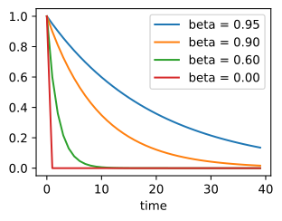
12.6.2 Practical Experiments
Let’s see how momentum works in practice, i.e., when used within the context of a proper optimizer. For this we need a somewhat more scalable implementation.
12.6.2.1 Implementation from Scratch
Compared with (minibatch) stochastic gradient descent the momentum method needs to maintain a set of auxiliary variables, i.e., velocity. It has the same shape as the gradients (and variables of the optimization problem). In the implementation below we call these variables states.
def init_momentum_states(feature_dim):
v_w = torch.zeros((feature_dim, 1))
v_b = torch.zeros(1)
return (v_w, v_b)
def sgd_momentum(params, states, hyperparams):
for p, v in zip(params, states):
with torch.no_grad():
v[:] = hyperparams['momentum'] * v + p.grad
p[:] -= hyperparams['lr'] * v
p.grad.data.zero_()Let’s see how this works in practice.
def train_momentum(lr, momentum, num_epochs=2):
d2l.train_ch11(sgd_momentum, init_momentum_states(feature_dim),
{'lr': lr, 'momentum': momentum}, data_iter,
feature_dim, num_epochs)
data_iter, feature_dim = d2l.get_data_ch11(batch_size=10)
train_momentum(0.02, 0.5)loss: 0.245, 0.153 sec/epoch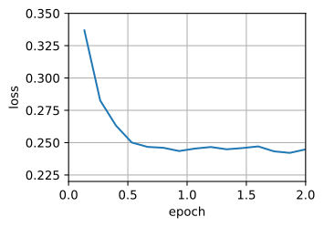
When we increase the momentum hyperparameter momentum to 0.9, it amounts to a significantly larger effective sample size of . We reduce the learning rate slightly to to keep matters under control.
train_momentum(0.01, 0.9)loss: 0.248, 0.109 sec/epoch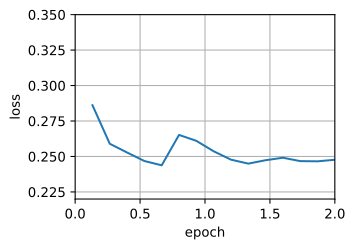
Reducing the learning rate further addresses any issue of non-smooth optimization problems. Setting it to yields good convergence properties.
train_momentum(0.005, 0.9)loss: 0.243, 0.107 sec/epoch12.6.2.2 Concise Implementation
There is very little to do in Gluon since the standard sgd solver already had momentum built in. Setting matching parameters yields a very similar trajectory.
trainer = torch.optim.SGD
d2l.train_concise_ch11(trainer, {'lr': 0.005, 'momentum': 0.9}, data_iter)loss: 0.250, 0.108 sec/epoch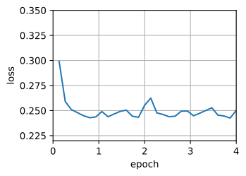
12.6.3 Theoretical Analysis
So far the 2D example of seemed rather contrived. We will now see that this is actually quite representative of the types of problem one might encounter, at least in the case of minimizing convex quadratic objective functions.
12.6.3.1 Quadratic Convex Functions
Consider the function
This is a general quadratic function. For positive definite matrices , i.e., for matrices with positive eigenvalues this has a minimizer at with minimum value . Hence we can rewrite as
The gradient is given by . That is, it is given by the distance between and the minimizer, multiplied by . Consequently also the velocity is a linear combination of terms .
Since is positive definite it can be decomposed into its eigensystem via for an orthogonal (rotation) matrix and a diagonal matrix of positive eigenvalues. This allows us to perform a change of variables from to to obtain a much simplified expression:
Here . Since is only an orthogonal matrix this does not perturb the gradients in a meaningful way. Expressed in terms of gradient descent becomes
The important fact in this expression is that gradient descent does not mix between different eigenspaces. That is, when expressed in terms of the eigensystem of the optimization problem proceeds in a coordinate-wise manner. This also holds for
In doing this we just proved the following theorem: gradient descent with and without momentum for a convex quadratic function decomposes into coordinate-wise optimization in the direction of the eigenvectors of the quadratic matrix.
12.6.3.2 Scalar Functions
Given the above result let’s see what happens when we minimize the function . For gradient descent we have
Whenever this optimization converges at an exponential rate since after steps we have . This shows how the rate of convergence improves initially as we increase the learning rate until . Beyond that things diverge and for the optimization problem diverges.
lambdas = [0.1, 1, 10, 19]
eta = 0.1
d2l.set_figsize((6, 4))
for lam in lambdas:
t = torch.arange(20).detach().numpy()
d2l.plt.plot(t, (1 - eta * lam) ** t, label=f'lambda = {lam:.2f}')
d2l.plt.xlabel('time')
d2l.plt.legend();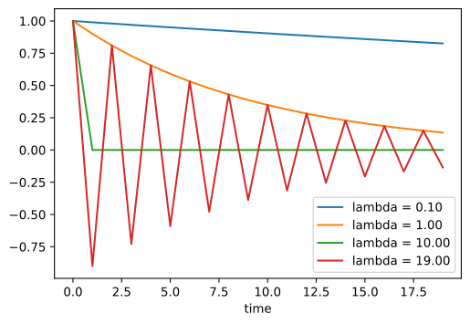
To analyze convergence in the case of momentum we begin by rewriting the update equations in terms of two scalars: one for and one for velocity . This yields:
We used to denote the governing convergence behavior. After steps the initial choice becomes . Hence, it is up to the eigenvalues of to determine the speed of convergence. See the Distill post of Goh (2017) for a great animation and Flammarion and Bach (2015) for a detailed analysis. One can show that velocity converges. This is a larger range of feasible parameters when compared to for gradient descent. It also suggests that in general large values of are desirable. Further details require a fair amount of technical detail and we suggest that the interested reader consult the original publications.
12.6.4 Summary
Momentum replaces gradients with a leaky average over past gradients. This accelerates convergence significantly.
It is desirable for both noise-free gradient descent and (noisy) stochastic gradient descent.
Momentum prevents stalling of the optimization process that is much more likely to occur for stochastic gradient descent.
The effective number of gradients is given by due to exponentiated downweighting of past data.
In the case of convex quadratic problems this can be analyzed explicitly in detail.
Implementation is quite straightforward but it requires us to store an additional state vector (velocity ).
12.6.5 Exercises
Use other combinations of momentum hyperparameters and learning rates and observe and analyze the different experimental results.
Try out gradient descent and momentum for a quadratic problem where you have multiple eigenvalues, i.e., , e.g., . Plot how the values of decrease for the initialization .
Derive minimum value and minimizer for .
What changes when we perform stochastic gradient descent with momentum? What happens when we use minibatch stochastic gradient descent with momentum? Experiment with the parameters?
O que mudou desde 2023 — atualização editorial
6.1 Como o PDF trata
- Heavy-ball momentum: , .
- Discussão de condicionamento (como momentum suaviza direções de alta curvatura).
- Nesterov momentum mencionado superficialmente.
6.2 O que mudou desde 2023 🟢 + 🟡
Momentum é fundação sólida, e continua fundação sólida. Mas apareceram extensões importantes.
(a) Nesterov hoje é o default até em otimizadores novos
Muon usa Nesterov-style momentum explicitamente por ter “empiricamente consistente melhor desempenho que momentum clássico” — ver seção do autor no blog do Keller Jordan.
(b) Muon: momentum + ortogonalização
O otimizador mais comentado de 2024–2025 é, literalmente, SGD-momentum reinterpretado geometricamente. A ideia:
- Calcule o momentum update como no heavy-ball.
- Se é uma matriz (pesos de uma camada Linear), substitua-a pela matriz ortogonal mais próxima via iterações de Newton–Schulz.
- Aplique o update ortogonalizado.

Por que funciona? Updates vindos de SGD-momentum têm alto condition number — são quase de rank baixo. Ortogonalizar “amplifica direções raras mas importantes” no update.
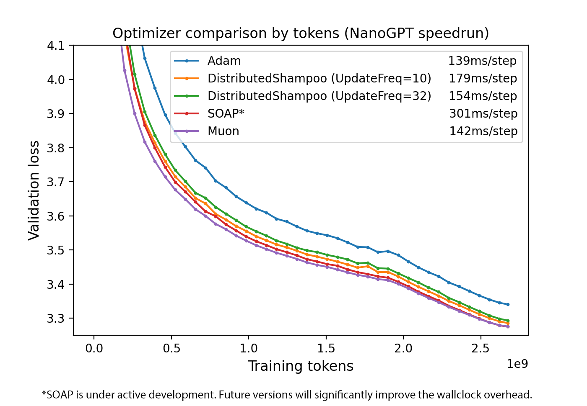
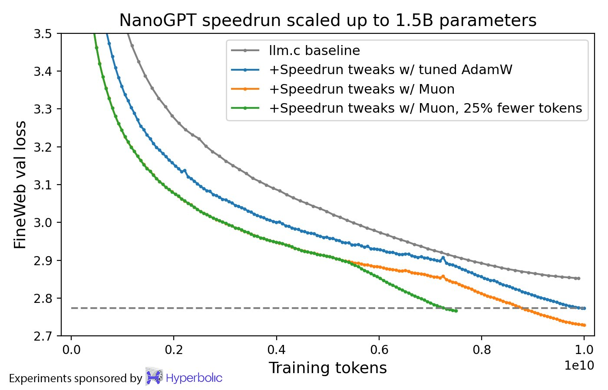
Resultados: ~35% de speedup wall-clock em NanoGPT, ~2× eficiência computacional vs AdamW em Mixture-of-Experts de 3B/16B no modelo Moonlight, e o Kimi K2 (trilhão de parâmetros, Moonshot AI, 2025) foi treinado inteiro com Muon (Liu et al. 2025, Muon is Scalable for LLM Training).
Detalhe prático: Muon é para parâmetros 2D de camadas ocultas. Embeddings, camadas de saída, biases e normas continuam em AdamW. O framework faz híbrido.
(c) Heavy-ball x Nesterov — entendimento melhor
Trabalhos teóricos recentes (2023-2025) refinaram quando Nesterov é estritamente melhor. Para objetivos fortemente convexos é claro; em redes profundas é empírico mas estável. A heurística sugerida no livro continua boa.
6.3 Discrepâncias
| Ponto do PDF | Estado em 2026 |
|---|---|
| Momentum como técnica aceleradora | 🟢 ainda correto |
| Nesterov como “variação secundária” | Hoje é frequentemente preferido; mencionar mais. 🟡 |
| Não menciona Muon | Adicionar como sucessor moderno do momentum clássico em LLMs 2D. |
Capítulo 6 — §12.10 Adam
Texto-base (Dive into Deep Learning)
In the discussions leading up to this section we encountered a number of techniques for efficient optimization. Let’s recap them in detail here:
We saw that Section 12.4 is more effective than Gradient Descent when solving optimization problems, e.g., due to its inherent resilience to redundant data.
We saw that Section 12.5 affords significant additional efficiency arising from vectorization, using larger sets of observations in one minibatch. This is the key to efficient multi-machine, multi-GPU and overall parallel processing.
Section 12.6 added a mechanism for aggregating a history of past gradients to accelerate convergence.
Section 12.7 used per-coordinate scaling to allow for a computationally efficient preconditioner.
Section 12.8 decoupled per-coordinate scaling from a learning rate adjustment.
Adam (Kingma and Ba, 2014) combines all these techniques into one efficient learning algorithm. As expected, this is an algorithm that has become rather popular as one of the more robust and effective optimization algorithms to use in deep learning. It is not without issues, though. In particular, (Reddi et al. , 2019) show that there are situations where Adam can diverge due to poor variance control. In a follow-up work Zaheer et al. (2018) proposed a hotfix to Adam, called Yogi which addresses these issues. More on this later. For now let’s review the Adam algorithm.
12.10.1 The Algorithm
One of the key components of Adam is that it uses exponential weighted moving averages (also known as leaky averaging) to obtain an estimate of both the momentum and also the second moment of the gradient. That is, it uses the state variables
Here and are nonnegative weighting parameters. Common choices for them are and . That is, the variance estimate moves much more slowly than the momentum term. Note that if we initialize we have a significant amount of bias initially towards smaller values. This can be addressed by using the fact that to re-normalize terms. Correspondingly the normalized state variables are given by
Armed with the proper estimates we can now write out the update equations. First, we rescale the gradient in a manner very much akin to that of RMSProp to obtain
Unlike RMSProp our update uses the momentum rather than the gradient itself. Moreover, there is a slight cosmetic difference as the rescaling happens using instead of . The former works arguably slightly better in practice, hence the deviation from RMSProp. Typically we pick for a good trade-off between numerical stability and fidelity.
Now we have all the pieces in place to compute updates. This is slightly anticlimactic and we have a simple update of the form
Reviewing the design of Adam its inspiration is clear. Momentum and scale are clearly visible in the state variables. Their rather peculiar definition forces us to debias terms (this could be fixed by a slightly different initialization and update condition). Second, the combination of both terms is pretty straightforward, given RMSProp. Last, the explicit learning rate allows us to control the step length to address issues of convergence.
12.10.2 Implementation
Implementing Adam from scratch is not very daunting. For convenience we store the time step counter in the hyperparams dictionary. Beyond that all is straightforward.
%matplotlib inline
import torch
from d2l import torch as d2l
def init_adam_states(feature_dim):
v_w, v_b = torch.zeros((feature_dim, 1)), torch.zeros(1)
s_w, s_b = torch.zeros((feature_dim, 1)), torch.zeros(1)
return ((v_w, s_w), (v_b, s_b))
def adam(params, states, hyperparams):
beta1, beta2, eps = 0.9, 0.999, 1e-6
for p, (v, s) in zip(params, states):
with torch.no_grad():
v[:] = beta1 * v + (1 - beta1) * p.grad
s[:] = beta2 * s + (1 - beta2) * torch.square(p.grad)
v_bias_corr = v / (1 - beta1 ** hyperparams['t'])
s_bias_corr = s / (1 - beta2 ** hyperparams['t'])
p[:] -= hyperparams['lr'] * v_bias_corr / (torch.sqrt(s_bias_corr)
+ eps)
p.grad.data.zero_()
hyperparams['t'] += 1We are ready to use Adam to train the model. We use a learning rate of .
data_iter, feature_dim = d2l.get_data_ch11(batch_size=10)
d2l.train_ch11(adam, init_adam_states(feature_dim),
{'lr': 0.01, 't': 1}, data_iter, feature_dim);loss: 0.243, 0.193 sec/epoch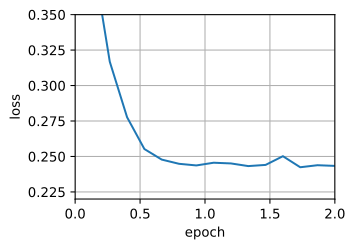
A more concise implementation is straightforward since adam is one of the algorithms provided as part of the Gluon trainer optimization library. Hence we only need to pass configuration parameters for an implementation in Gluon.
trainer = torch.optim.Adam
d2l.train_concise_ch11(trainer, {'lr': 0.01}, data_iter)loss: 0.243, 0.152 sec/epoch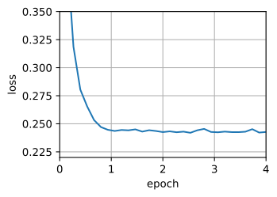
12.10.3 Yogi
One of the problems of Adam is that it can fail to converge even in convex settings when the second moment estimate in blows up. As a fix Zaheer et al. (2018) proposed a refined update (and initialization) for . To understand what’s going on, let’s rewrite the Adam update as follows:
Whenever has high variance or updates are sparse, might forget past values too quickly. A possible fix for this is to replace by . Now the magnitude of the update no longer depends on the amount of deviation. This yields the Yogi updates
The authors furthermore advise to initialize the momentum on a larger initial batch rather than just initial pointwise estimate. We omit the details since they are not material to the discussion and since even without this convergence remains pretty good.
def yogi(params, states, hyperparams):
beta1, beta2, eps = 0.9, 0.999, 1e-3
for p, (v, s) in zip(params, states):
with torch.no_grad():
v[:] = beta1 * v + (1 - beta1) * p.grad
s[:] = s + (1 - beta2) * torch.sign(
torch.square(p.grad) - s) * torch.square(p.grad)
v_bias_corr = v / (1 - beta1 ** hyperparams['t'])
s_bias_corr = s / (1 - beta2 ** hyperparams['t'])
p[:] -= hyperparams['lr'] * v_bias_corr / (torch.sqrt(s_bias_corr)
+ eps)
p.grad.data.zero_()
hyperparams['t'] += 1
data_iter, feature_dim = d2l.get_data_ch11(batch_size=10)
d2l.train_ch11(yogi, init_adam_states(feature_dim),
{'lr': 0.01, 't': 1}, data_iter, feature_dim);loss: 0.243, 0.165 sec/epoch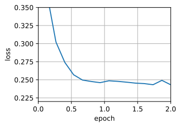
12.10.4 Summary
Adam combines features of many optimization algorithms into a fairly robust update rule.
Created on the basis of RMSProp, Adam also uses EWMA on the minibatch stochastic gradient.
Adam uses bias correction to adjust for a slow startup when estimating momentum and a second moment.
For gradients with significant variance we may encounter issues with convergence. They can be amended by using larger minibatches or by switching to an improved estimate for . Yogi offers such an alternative.
12.10.5 Exercises
Adjust the learning rate and observe and analyze the experimental results.
Can you rewrite momentum and second moment updates such that it does not require bias correction?
Why do you need to reduce the learning rate as we converge?
Try to construct a case for which Adam diverges and Yogi converges?
O que mudou desde 2023 — atualização editorial
7.1 Como o PDF trata
Apresenta Adam clássico (Kingma & Ba, 2015):
Apresenta variantes (Yogi), menciona bias-correction.
7.2 O que mudou desde 2023 🟡 (concepts OK; defaults desatualizados)
(a) AdamW é o default, não Adam
Já discutido em §2. Relembrando:
🔴 Legado: torch.optim.Adam(model.parameters(), weight_decay=0.1)
🟢 Atual: torch.optim.AdamW(model.parameters(), weight_decay=0.1)
Até 2025, AdamW continua sendo descrito como o gold standard para treinamento de LLMs (Metric Coders 2024). Mesmo com Muon/Sophia superando-o em benchmarks, AdamW vence em estabilidade, maturidade, suporte de ecossistema e menor risco de divergência em escala.
(b) Hiperparâmetros em LLMs (2024-2025)
| Hiperparâmetro | Default do livro (CV/NLP 2021) | Prática 2024-2026 (LLM) |
|---|---|---|
| 0.9 | 0.9 | |
| 0.999 | 0.95 (LLaMA, Mistral) ou 0.98 | |
| 1e-8 | 1e-8 em fp32; 1e-6 a 1e-7 em bf16/fp16 | |
| weight decay (decoupled) | 0 | 0.1 típico em pretraining; 0.01 em fine-tuning |
| LR pico | 1e-3 a 1e-4 | 6e-4 a 3e-4 para pretraining; 1e-5 a 5e-5 para fine-tuning |
| warmup | ausente no livro | 1-10% dos passos totais |
| gradient clipping | ausente no livro | norma global 1.0 quase universal |
(c) Bias correction ainda relevante em bf16
A correção do livro importa mais em bfloat16 do que em fp32, porque o começo do treino em bf16 é onde ocorrem as sudden loss spikes (pico de loss ou NaN). Weight decay + bias correction + grad clipping são a tríade anti-NaN em bf16.
(d) Memória de Adam vira gargalo
Adam guarda e — 2× o tamanho dos pesos em estado do otimizador. Para um modelo de 70B parâmetros em bf16, é ~280 GB só de otimizador. Isso motivou: - Adafactor (Shazeer & Stern, 2018) — fatoriza , economia brutal. Usado em treinamentos T5/PaLM. - 8-bit Adam (Dettmers, 2022) — quantiza estados. Padrão em fine-tuning eficiente. - Lion (2023) — só guarda (economia de 50% vs Adam). Ver §8. - DistributedShampoo / Muon — razões de eficiência diferentes, mas igualmente relevantes.
7.3 Discrepâncias
| Ponto do PDF | Estado em 2026 |
|---|---|
| Adam com defaults (β₁=.9, β₂=.999, ε=1e-8) | β₂=.95, ε=1e-8 ou 1e-7 em bf16. 🟡 |
| Não menciona AdamW | Acrescentar. 🔴 |
| Não menciona Lion/Sophia/Muon | Acrescentar. 🔴 |
| Não menciona warmup, grad clipping | Adicionar como prática padrão em LLMs. 🔴 |
Capítulo 7 — §12.11 Learning Rate Scheduling
Texto-base (Dive into Deep Learning)
So far we primarily focused on optimization algorithms for how to update the weight vectors rather than on the rate at which they are being updated. Nonetheless, adjusting the learning rate is often just as important as the actual algorithm. There are a number of aspects to consider:
Most obviously the magnitude of the learning rate matters. If it is too large, optimization diverges, if it is too small, it takes too long to train or we end up with a suboptimal result. We saw previously that the condition number of the problem matters (see e.g., Section 12.6 for details). Intuitively it is the ratio of the amount of change in the least sensitive direction vs. the most sensitive one.
Secondly, the rate of decay is just as important. If the learning rate remains large we may simply end up bouncing around the minimum and thus not reach optimality. Section 12.5 discussed this in some detail and we analyzed performance guarantees in Section 12.4. In short, we want the rate to decay, but probably more slowly than which would be a good choice for convex problems.
Another aspect that is equally important is initialization. This pertains both to how the parameters are set initially (review Section 5.4 for details) and also how they evolve initially. This goes under the moniker of warmup, i.e., how rapidly we start moving towards the solution initially. Large steps in the beginning might not be beneficial, in particular since the initial set of parameters is random. The initial update directions might be quite meaningless, too.
Lastly, there are a number of optimization variants that perform cyclical learning rate adjustment. This is beyond the scope of the current chapter. We recommend the reader to review details in Izmailov et al. (2018), e.g., how to obtain better solutions by averaging over an entire path of parameters.
Given the fact that there is a lot of detail needed to manage learning rates, most deep learning frameworks have tools to deal with this automatically. In the current chapter we will review the effects that different schedules have on accuracy and also show how this can be managed efficiently via a learning rate scheduler.
12.11.1 Toy Problem
We begin with a toy problem that is cheap enough to compute easily, yet sufficiently nontrivial to illustrate some of the key aspects. For that we pick a slightly modernized version of LeNet (relu instead of sigmoid activation, MaxPooling rather than AveragePooling), as applied to Fashion-MNIST. Moreover, we hybridize the network for performance. Since most of the code is standard we just introduce the basics without further detailed discussion. See Section 7 for a refresher as needed.
%matplotlib inline
import math
import torch
from torch import nn
from torch.optim import lr_scheduler
from d2l import torch as d2l
def net_fn():
model = nn.Sequential(
nn.Conv2d(1, 6, kernel_size=5, padding=2), nn.ReLU(),
nn.MaxPool2d(kernel_size=2, stride=2),
nn.Conv2d(6, 16, kernel_size=5), nn.ReLU(),
nn.MaxPool2d(kernel_size=2, stride=2),
nn.Flatten(),
nn.Linear(16 * 5 * 5, 120), nn.ReLU(),
nn.Linear(120, 84), nn.ReLU(),
nn.Linear(84, 10))
return model
loss = nn.CrossEntropyLoss()
device = d2l.try_gpu()
batch_size = 256
train_iter, test_iter = d2l.load_data_fashion_mnist(batch_size=batch_size)
## The code is almost identical to `d2l.train_ch6` defined in the
## lenet section of chapter convolutional neural networks
def train(net, train_iter, test_iter, num_epochs, loss, trainer, device,
scheduler=None):
net.to(device)
animator = d2l.Animator(xlabel='epoch', xlim=[0, num_epochs],
legend=['train loss', 'train acc', 'test acc'])
for epoch in range(num_epochs):
metric = d2l.Accumulator(3) # train_loss, train_acc, num_examples
for i, (X, y) in enumerate(train_iter):
net.train()
trainer.zero_grad()
X, y = X.to(device), y.to(device)
y_hat = net(X)
l = loss(y_hat, y)
l.backward()
trainer.step()
with torch.no_grad():
metric.add(l * X.shape[0], d2l.accuracy(y_hat, y), X.shape[0])
train_loss = metric[0] / metric[2]
train_acc = metric[1] / metric[2]
if (i + 1) % 50 == 0:
animator.add(epoch + i / len(train_iter),
(train_loss, train_acc, None))
test_acc = d2l.evaluate_accuracy_gpu(net, test_iter)
animator.add(epoch+1, (None, None, test_acc))
if scheduler:
if scheduler.__module__ == lr_scheduler.__name__:
# Using PyTorch In-Built scheduler
scheduler.step()
else:
# Using custom defined scheduler
for param_group in trainer.param_groups:
param_group['lr'] = scheduler(epoch)
print(f'train loss {train_loss:.3f}, train acc {train_acc:.3f}, '
f'test acc {test_acc:.3f}')Let’s have a look at what happens if we invoke this algorithm with default settings, such as a learning rate of and train for iterations. Note how the training accuracy keeps on increasing while progress in terms of test accuracy stalls beyond a point. The gap between both curves indicates overfitting.
lr, num_epochs = 0.3, 30
net = net_fn()
trainer = torch.optim.SGD(net.parameters(), lr=lr)
train(net, train_iter, test_iter, num_epochs, loss, trainer, device)train loss 0.145, train acc 0.944, test acc 0.877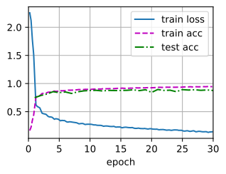
12.11.2 Schedulers
One way of adjusting the learning rate is to set it explicitly at each step. This is conveniently achieved by the set_learning_rate method. We could adjust it downward after every epoch (or even after every minibatch), e.g., in a dynamic manner in response to how optimization is progressing.
lr = 0.1
trainer.param_groups[0]["lr"] = lr
print(f'learning rate is now {trainer.param_groups[0]["lr"]:.2f}')learning rate is now 0.10More generally we want to define a scheduler. When invoked with the number of updates it returns the appropriate value of the learning rate. Let’s define a simple one that sets the learning rate to .
class SquareRootScheduler:
def __init__(self, lr=0.1):
self.lr = lr
def __call__(self, num_update):
return self.lr * pow(num_update + 1.0, -0.5)Let’s plot its behavior over a range of values.
scheduler = SquareRootScheduler(lr=0.1)
d2l.plot(torch.arange(num_epochs), [scheduler(t) for t in range(num_epochs)])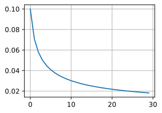
Now let’s see how this plays out for training on Fashion-MNIST. We simply provide the scheduler as an additional argument to the training algorithm.
net = net_fn()
trainer = torch.optim.SGD(net.parameters(), lr)
train(net, train_iter, test_iter, num_epochs, loss, trainer, device,
scheduler)train loss 0.273, train acc 0.900, test acc 0.886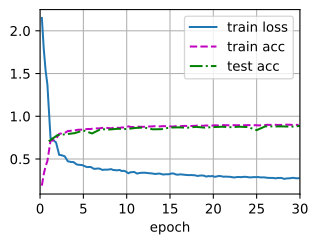
This worked quite a bit better than previously. Two things stand out: the curve was rather more smooth than previously. Secondly, there was less overfitting. Unfortunately it is not a well-resolved question as to why certain strategies lead to less overfitting in theory. There is some argument that a smaller stepsize will lead to parameters that are closer to zero and thus simpler. However, this does not explain the phenomenon entirely since we do not really stop early but simply reduce the learning rate gently.
12.11.3 Policies
While we cannot possibly cover the entire variety of learning rate schedulers, we attempt to give a brief overview of popular policies below. Common choices are polynomial decay and piecewise constant schedules. Beyond that, cosine learning rate schedules have been found to work well empirically on some problems. Lastly, on some problems it is beneficial to warm up the optimizer prior to using large learning rates.
12.11.3.1 Factor Scheduler
One alternative to a polynomial decay would be a multiplicative one, that is for . To prevent the learning rate from decaying beyond a reasonable lower bound the update equation is often modified to .
class FactorScheduler:
def __init__(self, factor=1, stop_factor_lr=1e-7, base_lr=0.1):
self.factor = factor
self.stop_factor_lr = stop_factor_lr
self.base_lr = base_lr
def __call__(self, num_update):
self.base_lr = max(self.stop_factor_lr, self.base_lr * self.factor)
return self.base_lr
scheduler = FactorScheduler(factor=0.9, stop_factor_lr=1e-2, base_lr=2.0)
d2l.plot(torch.arange(50), [scheduler(t) for t in range(50)])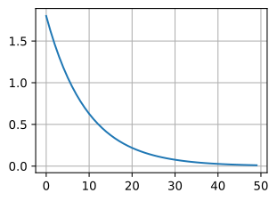
This can also be accomplished by a built-in scheduler in MXNet via the lr_scheduler.FactorScheduler object. It takes a few more parameters, such as warmup period, warmup mode (linear or constant), the maximum number of desired updates, etc.; Going forward we will use the built-in schedulers as appropriate and only explain their functionality here. As illustrated, it is fairly straightforward to build your own scheduler if needed.
12.11.3.2 Multi Factor Scheduler
A common strategy for training deep networks is to keep the learning rate piecewise constant and to decrease it by a given amount every so often. That is, given a set of times when to decrease the rate, such as decrease whenever . Assuming that the values are halved at each step we can implement this as follows.
net = net_fn()
trainer = torch.optim.SGD(net.parameters(), lr=0.5)
scheduler = lr_scheduler.MultiStepLR(trainer, milestones=[15, 30], gamma=0.5)
def get_lr(trainer, scheduler):
lr = scheduler.get_last_lr()[0]
trainer.step()
scheduler.step()
return lr
d2l.plot(torch.arange(num_epochs), [get_lr(trainer, scheduler)
for t in range(num_epochs)])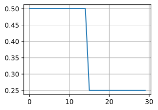
The intuition behind this piecewise constant learning rate schedule is that one lets optimization proceed until a stationary point has been reached in terms of the distribution of weight vectors. Then (and only then) do we decrease the rate such as to obtain a higher quality proxy to a good local minimum. The example below shows how this can produce ever slightly better solutions.
train(net, train_iter, test_iter, num_epochs, loss, trainer, device,
scheduler)train loss 0.194, train acc 0.927, test acc 0.869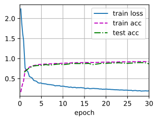
12.11.3.3 Cosine Scheduler
A rather perplexing heuristic was proposed by Loshchilov and Hutter (2016). It relies on the observation that we might not want to decrease the learning rate too drastically in the beginning and moreover, that we might want to “refine” the solution in the end using a very small learning rate. This results in a cosine-like schedule with the following functional form for learning rates in the range .
Here is the initial learning rate, is the target rate at time . Furthermore, for we simply pin the value to without increasing it again. In the following example, we set the max update step .
class CosineScheduler:
def __init__(self, max_update, base_lr=0.01, final_lr=0,
warmup_steps=0, warmup_begin_lr=0):
self.base_lr_orig = base_lr
self.max_update = max_update
self.final_lr = final_lr
self.warmup_steps = warmup_steps
self.warmup_begin_lr = warmup_begin_lr
self.max_steps = self.max_update - self.warmup_steps
def get_warmup_lr(self, epoch):
increase = (self.base_lr_orig - self.warmup_begin_lr) \
* float(epoch) / float(self.warmup_steps)
return self.warmup_begin_lr + increase
def __call__(self, epoch):
if epoch < self.warmup_steps:
return self.get_warmup_lr(epoch)
if epoch <= self.max_update:
self.base_lr = self.final_lr + (
self.base_lr_orig - self.final_lr) * (1 + math.cos(
math.pi * (epoch - self.warmup_steps) / self.max_steps)) / 2
return self.base_lr
scheduler = CosineScheduler(max_update=20, base_lr=0.3, final_lr=0.01)
d2l.plot(torch.arange(num_epochs), [scheduler(t) for t in range(num_epochs)])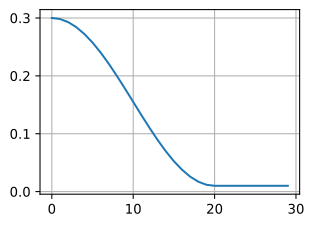
In the context of computer vision this schedule can lead to improved results. Note, though, that such improvements are not guaranteed (as can be seen below).
net = net_fn()
trainer = torch.optim.SGD(net.parameters(), lr=0.3)
train(net, train_iter, test_iter, num_epochs, loss, trainer, device,
scheduler)train loss 0.159, train acc 0.942, test acc 0.904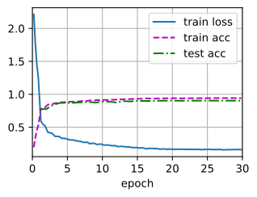
12.11.3.4 Warmup
In some cases initializing the parameters is not sufficient to guarantee a good solution. This is particularly a problem for some advanced network designs that may lead to unstable optimization problems. We could address this by choosing a sufficiently small learning rate to prevent divergence in the beginning. Unfortunately this means that progress is slow. Conversely, a large learning rate initially leads to divergence.
A rather simple fix for this dilemma is to use a warmup period during which the learning rate increases to its initial maximum and to cool down the rate until the end of the optimization process. For simplicity one typically uses a linear increase for this purpose. This leads to a schedule of the form indicated below.
scheduler = CosineScheduler(20, warmup_steps=5, base_lr=0.3, final_lr=0.01)
d2l.plot(torch.arange(num_epochs), [scheduler(t) for t in range(num_epochs)])
Note that the network converges better initially (in particular observe the performance during the first 5 epochs).
net = net_fn()
trainer = torch.optim.SGD(net.parameters(), lr=0.3)
train(net, train_iter, test_iter, num_epochs, loss, trainer, device,
scheduler)train loss 0.181, train acc 0.934, test acc 0.901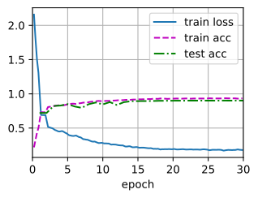
Warmup can be applied to any scheduler (not just cosine). For a more detailed discussion of learning rate schedules and many more experiments see also (Gotmare et al. , 2018). In particular they find that a warmup phase limits the amount of divergence of parameters in very deep networks. This makes intuitively sense since we would expect significant divergence due to random initialization in those parts of the network that take the most time to make progress in the beginning.
12.11.4 Summary
Decreasing the learning rate during training can lead to improved accuracy and (most perplexingly) reduced overfitting of the model.
A piecewise decrease of the learning rate whenever progress has plateaued is effective in practice. Essentially this ensures that we converge efficiently to a suitable solution and only then reduce the inherent variance of the parameters by reducing the learning rate.
Cosine schedulers are popular for some computer vision problems. See e.g., GluonCV for details of such a scheduler.
A warmup period before optimization can prevent divergence.
Optimization serves multiple purposes in deep learning. Besides minimizing the training objective, different choices of optimization algorithms and learning rate scheduling can lead to rather different amounts of generalization and overfitting on the test set (for the same amount of training error).
12.11.5 Exercises
Experiment with the optimization behavior for a given fixed learning rate. What is the best model you can obtain this way?
How does convergence change if you change the exponent of the decrease in the learning rate? Use
PolySchedulerfor your convenience in the experiments.Apply the cosine scheduler to large computer vision problems, e.g., training ImageNet. How does it affect performance relative to other schedulers?
How long should warmup last?
Can you connect optimization and sampling? Start by using results from Welling and Teh (2011) on Stochastic Gradient Langevin Dynamics.
O que mudou desde 2023 — atualização editorial
O PDF apenas começa a tratar este tópico (fica no fim do capítulo 12.11). Como é tema central e central, detalhamos os schedules que hoje são padrão.
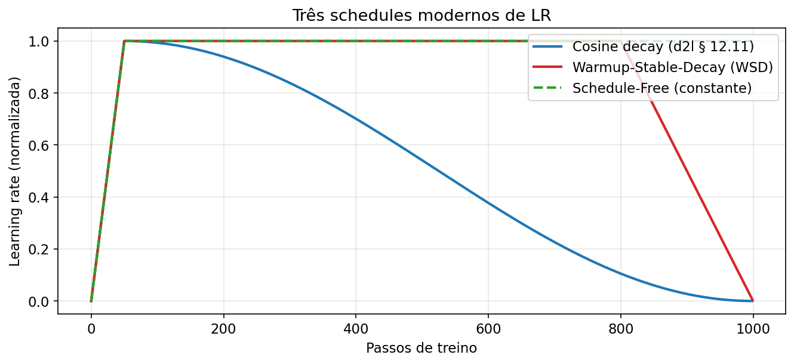
9.1 Warmup + Cosine decay
Padrão dominante de 2018 até hoje. Warmup linear de ao longo de 1-10% dos passos, seguido por cosine até (ou até ). GPT-3, LLaMA 1/2/3, Mistral — todos esta receita.
9.2 Warmup-Stable-Decay (WSD) — novo padrão emergente
Três fases: 1. Warmup: linear (curto, 1-2%). 2. Stable: constante por ~80-90% dos passos. 3. Decay: queda agressiva (linear ou exponencial) até perto de 0 nos últimos 10-20%.
[WSD vs Cosine — ver assets/lr_schedules_comparacao.png]
Por que WSD se tornou popular? Hägele et al. 2024, Understanding WSD explica via o river-valley loss landscape: - Durante a fase stable, o loss permanece maior que no cosine — mas o modelo explora a “ravina” rapidamente. - No decay final, o loss despenca — frequentemente termina abaixo do cosine equivalente.
Vantagem operacional: você pode checkpoint antes do decay e continuar treinando mais depois, sem ter o “horizon lock” do cosine.
9.3 Decay-to-Zero (D2Z) linear
Bergsma et al. 2025 mostra que decair linearmente até zero supera sistematicamente cosine-a-10% em LLMs, especialmente em altos tokens-per-parameter. Virou recomendação de ponta em 2025.
9.4 Schedule-Free — nenhum schedule
Já visto em §8.5. Alternativa: não decair, deixar a média Polyak fazer o trabalho. Praticamente ninguém usa cosine sem Schedule-Free ser uma opção avaliada em treinos novos de 2025 em diante.
9.5 Discrepâncias
| Ponto do PDF | Estado em 2026 |
|---|---|
| Cosine e polinomial como principais schedules | Ambos ainda usados, mas WSD e D2Z emergiram como fortes concorrentes. 🟡 |
| Sem menção a warmup | Warmup é universal. Adicionar. 🔴 |
| Schedule como “o que você decide sobre η(t)” | Para Schedule-Free, o paradigma muda. |
Parte II — Deep-dives nos papers pós-2023
A Parte II aprofunda dez trabalhos centrais para entender o estado da arte em 2026. Os capítulos podem ser lidos em qualquer ordem; referenciados um a um nos boxes de atualização da Parte I.
AdamW: Decoupled Weight Decay Regularization
Loshchilov & Hutter, ICLR 2019. arXiv:1711.05101
Por que este paper importa para o módulo
O §12.10 do Dive into Deep Learning apresenta Adam como apresentado originalmente em 2015 — com weight_decay somado ao gradiente como uma penalidade . Este paper mostra, formal e empiricamente, que essa prática estava errada para otimizadores adaptativos. A correção — AdamW — é hoje o otimizador-padrão em praticamente todo pretraining de transformer. Compreender por que AdamW difere de Adam + L² é pré-requisito para ler qualquer código de LLM moderno.
A descoberta central
“L² regularization and weight decay regularization are equivalent for standard stochastic gradient descent (when rescaled by the learning rate), but as we demonstrate this is not the case for adaptive gradient algorithms, such as Adam.”
Em SGD, somar ao gradiente produz exatamente o mesmo passo que . A equivalência se quebra em Adam porque o pré-condicionador adaptativo divide também a contribuição de — fazendo com que pesos grandes em direções de baixa variância do gradiente (onde é pequeno) sejam relativamente mais decaídos do que em direções de alta variância. Ou seja: “weight decay” via L² no Adam fica acoplado aos segundos momentos, o que não é o comportamento desejado.
A correção: AdamW
A solução é aplicar o decaimento fora do passo adaptativo:
A implementação é tão simples quanto trocar torch.optim.Adam por torch.optim.AdamW. Essa troca de uma linha é responsável por boa parte das melhorias empíricas atribuídas a pequenas variantes arquiteturais em papers de 2019-2021 que não as isolavam cuidadosamente.
Evidência empírica
Nos experimentos do paper, AdamW reduz substancialmente a lacuna de top-1 accuracy entre Adam e SGD-com-momentum em ImageNet e CIFAR, permitindo que Adam se torne competitivo em tarefas de visão — exatamente o contexto em que antes se dizia “Adam converge rápido mas generaliza pior”. Outro resultado importante: o ótimo fica aproximadamente independente da taxa de aprendizado, simplificando drasticamente a sintonia conjunta de hiperparâmetros.
Adoção na prática
AdamW é hoje o default de PyTorch (torch.optim.AdamW), Hugging Face transformers, DeepSpeed, PyTorch Lightning, JAX/Optax (optax.adamw). Qualquer repositório sério de LLM — LLaMA, Mistral, Qwen, DeepSeek, GPT-NeoX, Pythia — usa AdamW ou uma variante de decay desacoplado. Os defaults típicos são (1e-7 em bf16), com warmup de 1-10% dos passos e LR-peak na casa de para modelos de 1-70B.
Limitações do paper
O escopo empírico é dominado por visão (CIFAR-10/100, ImageNet) em CNNs. A validação em NLP/transformers veio só com a adoção pela comunidade nos 2-3 anos seguintes. O artigo também não fornece análise teórica de convergência da nova dinâmica — ela existe em trabalhos posteriores, mas continua menos madura que a teoria de Adam clássico.
Conexão com o capítulo seguinte
O paper de Andriushchenko et al. (2024, próximo capítulo) argumenta que mesmo com AdamW, a interpretação “weight decay regulariza capacidade” está errada — o papel real é dinâmico. Essa camada teórica é a atualização 2024 sobre o próprio legado do AdamW.
Why Do We Need Weight Decay in Modern Deep Learning?
Andriushchenko, D’Angelo, Varre, Flammarion. NeurIPS 2024. Paper · código
Tese que contraria o livro
O §3.7 do D2L apresenta weight decay como regularização no sentido clássico: o termo reduz a capacidade efetiva do modelo e, portanto, o overfitting. Este paper demonstra que em aprendizado profundo moderno essa leitura é essencialmente incorreta. A sentença que resume a tese:
“Weight decay is never useful as an explicit regularizer but instead changes the training dynamics in a desirable way.”
Isto é, o benefício de aplicar weight decay não vem de “segurar a norma dos pesos”, mas de como ele altera a trajetória do otimizador ao longo do espaço de parâmetros. O paper identifica dois mecanismos distintos conforme o regime de treino.
Mecanismo 1: redes de visão, múltiplas épocas
No regime que o livro tem em mente — ResNets/ViTs em ImageNet com múltiplas épocas e possibilidade real de overfit — o weight decay age amplificando o ruído implícito do SGD. A análise faz a seguinte conexão:
- SGD injeta ruído estruturado no subespaço dos gradientes por exemplo.
- Esse ruído, combinado com a norma do Jacobiano, gera um efeito de regularização implícita que controla a sharpness do mínimo final.
- Weight decay mantém esse efeito ativo ao impedir que a norma dos pesos cresça indefinidamente (o que atenuaria o ruído).
Ou seja, o benefício não é a penalidade em si, mas sim que o decay mantém o SGD operando no regime onde o implicit bias é efetivo. Isto explica por que weight decay combina particularmente bem com batch sizes pequenos e LR grandes — todos os ingredientes do “SGD noise regime”.
Mecanismo 2: LLMs, uma única época
Para grandes modelos de linguagem em pretraining com ~1 época sobre os dados, o livro não se aplica: não há overfitting no sentido clássico (o modelo nunca reencontra o mesmo token). Aqui o papel do weight decay é ainda mais distante da regularização:
- Ele equilibra o bias-variance tradeoff do próprio estimador estocástico do gradiente;
- Reduz o training loss (não só o test loss), o que invalida completamente a leitura “sacrifica-se treino por generalização”;
- Previne divergências repentinas em mixed precision bfloat16 — as chamadas sudden loss spikes que são o fantasma dos treinos em larga escala.
Este último ponto é decisivo: em bf16, o range dinâmico é amplo mas a mantissa curta (7 bits) introduz ruído numérico. Weight decay estabiliza porque mantém a norma dos pesos em uma faixa onde os produtos permanecem em ordem de grandeza consistente, evitando overflow/underflow intermitentes.
Evidências experimentais
Os autores validam cada mecanismo separadamente:
- Em visão — ResNets em CIFAR-10/100 e ImageNet — mostram que remover weight decay degrada tanto test loss quanto sharpness (medida via maior autovalor do Hessiano); restabelecer o decay reverte ambos.
- Em LLMs — modelos da família GPT-2 e maiores — mostram que a presença de weight decay reduz a variância trecho-a-trecho da loss curve e reduz a frequência de loss spikes em bf16. O training loss final é menor com weight decay.
Implicações práticas
- Mantenha weight decay ligado em LLM pretraining, mesmo sabendo que não há overfit — ele é parte da tríade anti-NaN (junto com gradient clipping e warmup).
- é a faixa robusta; é típico em pretraining, em fine-tuning.
- Exclua biases e parâmetros de normalização (LayerNorm/RMSNorm γ) do decay — eles não se beneficiam do mecanismo de estabilização dinâmica.
- Não espere melhora em test loss via aumento de em LLMs — a curva é aproximadamente plana sobre uma faixa ampla de ; escolha pela estabilidade, não pela generalização.
Conexão com o restante do material
Este paper explica por que a intuição clássica do §3.7 envelheceu sem invalidar a prática: continuamos ligando weight decay, mas por razão diferente da que o livro ensina. Combinando com o paper AdamW (anterior), temos o quadro moderno: use AdamW com , bf16, warmup curto, clip de 1.0 — não porque cada peça regulariza capacidade, mas porque juntas geram uma dinâmica estável em escala.
Lion: Symbolic Discovery of Optimization Algorithms
Chen, Liang, Huang, Real, Wang, Pham, Dong, Luong, Hsieh, Lu, Le. NeurIPS 2023. arXiv:2302.06675
A história incomum desta descoberta
Lion (EvoLved Sign Momentum) não foi desenhado manualmente por um pesquisador. Ele foi descoberto por busca simbólica automatizada no Google Brain: um sistema exploratório evoluiu programas candidatos de otimizador num espaço vasto de expressões, com regras de seleção e simplificação para reduzir overfit entre tarefas-proxy e tarefas reais. O algoritmo mais consistente que emergiu é tão simples que chocou os próprios autores.
A atualização em duas linhas
O Lion só mantém um único estado auxiliar por parâmetro — o momentum — e produz updates de magnitude uniforme via sign:
Compare com AdamW: Lion descarta a estimativa do segundo momento (metade da memória) e a operação não-linear de divisão por . A perda de adaptação por-parâmetro é compensada pela operação sign, que normaliza o tamanho de cada componente do update.
Defaults recomendados: (note que aqui não é a do Adam), o valor que se usaria em AdamW, e cerca de 3–10× menor que em AdamW equivalente.
Por que Lion funciona
A interpretação mais convincente é que sign(m) uniformiza o tamanho do passo por coordenada, o que faz cada parâmetro caminhar na mesma velocidade — uma forma agressiva de pré-condicionamento. Em paisagens mal condicionadas (típicas de redes grandes), isso explora bem direções raras. A desvantagem é que em direções onde o gradiente varia com sinal oposto em batches consecutivos, o momentum atrasa a estabilização — daí a necessidade de (mais conservador que o típico) para garantir que o sinal seja o do momentum, não do gradiente corrente.
Resultados empíricos de destaque
No paper e reproduções independentes:
- Visão (ViT em ImageNet): até +2% de top-1 accuracy vs AdamW; economia de até 2× no compute de pretraining em JFT.
- Difusão (Imagen, Stable Diffusion-class): FID 2.3× melhor e redução do compute de treino de até 2.3×.
- Contrastivo visão-linguagem (CLIP-class): 88.3% zero-shot e 91.1% fine-tuning em ImageNet (+2% e +0.1% vs melhores até então).
- Language modeling autoregressivo: desempenho similar ou ligeiramente melhor que Adam, mais sensível a hiperparâmetros.
- Notavelmente, Lion foi deployado em produção no Google search ads CTR model, o que é um sinal forte de que não é só um resultado benchmark.
Economia de memória
Para um modelo de 70B parâmetros, AdamW guarda e (= 2× os pesos = ~280 GB em bf16). Lion guarda só (= ~140 GB), liberando metade da memória do otimizador. Isto não é trivial — em muitos setups, o estado do otimizador é o segundo maior consumo de VRAM depois das próprias ativações.
Limitações reconhecidas
Os próprios autores e vários follow-ups observam que:
- Sensibilidade a LR e weight decay — faixas estreitas; tunar é mais crítico que em AdamW.
- Menor estabilidade em escala muito grande para LLM pretraining puro — benchmarks para modelos >7B mostram resultados mistos.
- Benefício maior quando o batch é grande — em regime de batch pequeno, a ausência de deixa a variância do update mais alta.
Status em 2026
Lion é o default padrão de facto em pretraining de modelos de difusão (Stable Diffusion 3, Flux). Em LLMs competitivos com AdamW em várias faixas, mas raramente vence por margem decisiva — daí AdamW continuar sendo a escolha segura em pretraining de frontier models. A lição metodológica do paper (busca simbólica de otimizadores) é possivelmente mais influente que o algoritmo final.
Sophia: Second-order Optimizer for Language Model Pre-training
Liu, Tian, Chen, Sanborn, Ma, Goodman. ICLR 2024. arXiv:2305.14342
O que o paper tenta resolver
Métodos de segunda ordem (Newton, quase-Newton, K-FAC, Shampoo) têm teoria superior ao SGD/Adam, mas na prática são pesados demais para LLM pretraining — o custo de calcular ou aproximar o Hessiano a cada passo destrói qualquer ganho de convergência. Sophia busca o ponto de equilíbrio: usar uma aproximação diagonal do Hessiano, atualizada infrequentemente (a cada ~10 passos), com clipping elemento-a-elemento para controlar updates extremos. O resultado é overhead quase nulo com ganhos reais.
A atualização de Sophia
A mecânica do Sophia combina três ideias. Primeiro, uma média móvel dos gradientes como no Adam:
Segundo, uma estimativa diagonal do Hessiano — os autores usam Gauss-Newton-Bartlett (GNB), barato para modelos com perda cross-entropy — calculada apenas a cada passos (tipicamente ). Entre atualizações, é reutilizado. Uma média móvel estabiliza a estimativa:
Terceiro — e é a peça decisiva — um clipping elemento a elemento do pré-condicionamento:
O clipping garante que nenhum componente do update exceda magnitude (tipicamente ). Isto “tames the negative impact of non-convexity and rapid change of Hessian along the trajectory” — ou seja, controla o caso em que é tão pequeno que o update explode em uma direção. Na prática, o pré-condicionamento é aplicado suavemente, e o clipping age como safety net.
Por que funciona
A intuição chave: em paisagens de loss de LLMs, curvaturas diferentes em diferentes direções são a norma. Adam adapta por-parâmetro via , mas é a variância do gradiente, não a curvatura da loss — elas coincidem só para objetivos lineares. Sophia usa a curvatura estimada diretamente, atacando o mesmo problema com ferramenta mais apropriada.
Resultados empíricos
Nos experimentos do paper (GPT-2 classes, 125M a 1.5B parâmetros, treinando no OpenWebText):
- 2× speedup vs AdamW em passos, compute total e wall-clock — a Sophia atinge a mesma perplexity com 50% menos compute.
- O ganho cresce com o tamanho do modelo, sugerindo que Sophia é mais eficaz em modelos maiores — tendência animadora para pretraining de frontier.
- Overhead por passo é aproximadamente constante, pois o cálculo GNB é feito só a cada 10 passos e o resto do pipeline é comparável ao AdamW.
Custo e implementação
O GNB Hessian estimator requer um backward adicional a cada 10 passos com uma amostragem de pseudo-labels sampleados do modelo — barato em termos amortizados (~1-3% overhead médio). O estado do otimizador fica: + = 2× os pesos, mesmo tamanho que AdamW. Não há ganho de memória, só de velocidade.
Limitações
- Sensibilidade à implementação — , , e formam um espaço de tuning razoavelmente delicado.
- Análise teórica simplificada — a prova de convergência dos autores assume cenário ideal; transferência para o regime real de LLM é mais empírica.
- Adoção em produção é menor que a comunidade prevê. Apesar dos resultados, AdamW e Muon capturam a maior parte do mindshare em 2026, porque a diferença prática em escala de trilhão de parâmetros ainda não foi demonstrada publicamente.
Status em 2026
Sophia ocupa um nicho interessante: é o otimizador de segunda ordem mais próximo de “drop-in replacement” do AdamW que temos hoje, mas o nível de confiança depositado no Muon (que foi usado para treinar o Kimi K2 trilionário) é hoje maior. Vale conhecer como referência — e como ponto de comparação para o próximo salto de otimizadores de segunda ordem práticos.
Muon: Momentum Orthogonalized (2024 + 2025)
Keller Jordan et al. 2024. Blog canônico · GitHub
Liu et al., Moonshot AI, 2025. arXiv:2502.16982 — Muon is Scalable for LLM Training.
Por que Muon é o sucessor natural do §12.6
O §12.6 do D2L trata momentum como aceleração: acumular a direção recente para amortecer oscilações. Muon olha momentum com lentes geométricas: o update acumulado é uma matriz, e matrizes têm estrutura espectral. Se a maior parte da “energia” do momentum está em poucas direções (rank baixo, alto número de condição), então o otimizador gasta compute aprendendo nessas direções dominantes enquanto as direções raras — que podem ser mais importantes para aprender features novos — ficam subexploradas. Muon ataca exatamente esse desequilíbrio.
O algoritmo
Para cada parâmetro que é uma matriz 2D de camada oculta (todas as nn.Linear de transformer, exceto embeddings e head de saída):
- Momentum clássico (estilo Nesterov):
- Ortogonalização via Newton-Schulz: aproximar a matriz ortogonal mais próxima de pela seguinte iteração, 5 vezes, com coeficientes fine-tuned :
- Update:
Matematicamente: se é a SVD, a iteração NS converge para — a matriz ortogonal mais próxima de na norma de Frobenius. Essa operação amplifica as direções singulares raras (pequeno ) ao mesmo nível das dominantes, efetivamente “rebalanceando” o update.
Estabilidade em bf16 — vantagem decisiva
Newton-Schulz executa estavelmente em bfloat16. Iteração de Newton clássica (passo ) exige float32 por sensibilidade numérica. Essa diferença é o que torna Muon viável para LLMs: todo o restante do pipeline moderno (forward, backward, attention) roda em bf16 para reduzir memória e aumentar throughput; um otimizador que force upgrade para fp32 quebra esse compromisso.
Aplicação seletiva
Muon não é aplicado a tudo:
- Embeddings e head de output: ficam em AdamW. A teoria de “modular norm” explica o caso do embedding; o output é empírico.
- Biases e ganhos de normalização: ficam em AdamW (são 1D, Muon não se aplica).
- Convoluções: tratadas como
Linearapós achatar as últimas 3 dimensões — entram em Muon. - Projeções Q/K/V de attention: tratadas como três matrizes separadas, cada uma com sua ortogonalização independente.
Resultado: um treino típico é híbrido: a maioria dos parâmetros em Muon, alguns poucos (embedding, head, biases, norm) em AdamW.
Evidência empírica — escala pequena e média
- NanoGPT speedrun (meta: atingir val loss 3.28 em FineWeb): Muon reduziu o recorde em 1.35× em outubro 2024; 12+ recordes sucessivos desde então por 7 pesquisadores independentes — o padrão mais rigoroso de evidência empírica disponível em otimização.
- CIFAR-10 94%: de 3.3 → 2.6 A100-segundos.
- 1.5B params atingindo performance de GPT-2 XL em HellaSwag em 10h com 8×H100, vs 13.3h com AdamW — ~25% redução wall-clock.
Evidência empírica — escala de fronteira
Em 2025, Moonshot AI publicou Muon is Scalable for LLM Training:
- Moonlight — Mixture-of-Experts com 3B e 16B parâmetros, 5.7T tokens: ~2× eficiência vs AdamW compute-optimal. Movimenta a fronteira de Pareto.
- Kimi K2 — modelo trilionário da Moonshot, treinado inteiramente com Muon. É a maior validação em produção.
- Duas adições ao Muon original foram cruciais para escala: (1) adicionar weight decay, (2) escalar updates por-parâmetro de forma calibrada. Sem estas, Muon puro em trilhão divergia.
Custo computacional
O overhead de Newton-Schulz: FLOPs por parâmetro (com sendo a menor dimensão da matriz), comparado a no forward-backward (com = tokens por batch). Em NanoGPT (): ~0.7%. Em Llama 405B (): ~0.5%. Ou seja, overhead sub-1% em cenários realistas.
Status em 2026
Muon é o otimizador mais promissor entre os novos — superou AdamW em benchmarks sucessivos, tem deployment trilionário validado, e tem o manual de uso da comunidade open-source razoavelmente maduro. Ainda não é default universal (AdamW domina por maturidade), mas é a aposta mais forte para pretraining de frontier em 2026-2027.
Implicação pedagógica
Muon mostra que momentum não é apenas uma heurística de aceleração — é um tensor estruturado cuja geometria importa. Ideias análogas de ortogonalização de estado apareceram em Shampoo/SOAP (próximo capítulo conceitual) mas Muon é o primeiro a combinar simplicidade, estabilidade em bf16 e validação em escala trilionária.
Schedule-Free: The Road Less Scheduled
Defazio, Yaida, Mishchenko, Khaled, Cutkosky. NeurIPS 2024. arXiv:2405.15682 · GitHub
A premissa radical
Todo schedule do §12.11 do livro — cosine, polinomial, step decay — compartilha uma exigência implícita: você precisa saber, de antemão, quantos passos vai treinar. A LR decai ao longo de conhecido. Schedule-Free questiona essa premissa e mostra que, matematicamente, podemos eliminar o schedule preservando (ou melhorando) a qualidade final.
Intuição — Polyak–Ruppert + Primal averaging
Em otimização convexa, o teorema de Polyak-Ruppert diz que se você rodar SGD com LR constante e reportar a média dos iterados, a variância do estimador cai como sem precisar decaimento de LR. A catch é que em não-convexo (nosso caso), isso não funciona diretamente.
Schedule-Free combina dois tipos de averaging — Polyak-Ruppert (média de iterados) e primal averaging (média do ponto de avaliação) — de forma a obter as garantias de convergência equivalentes ao melhor schedule de LR, sem usar schedule. A elegância é notável: com LR constante o método tem convergência ótima, e não precisa saber antecipadamente.
As três sequências
A mecânica em pseudocódigo:
y_t = (1 - β) · z_t + β · x_t # ponto de avaliação do gradiente
z_{t+1} = z_t - η · ∇L(y_t) # update estilo AdamW (sem schedule)
x_{t+1} = (1 - c_t) · x_t + c_t · z_{t+1} # média acumulada- é a sequência de “passos” (onde o update de gradiente é aplicado).
- é a sequência de “pontos reportados” (a média de Polyak-Ruppert).
- é a sequência de “pontos de avaliação” do gradiente (interpolação entre e ).
O coeficiente faz ser a média aritmética simples; controla a força da interpolação primal ( degenera para Polyak-Ruppert puro).
Garantias e resultados
Os autores provam convergência ótima (matching bounds) para convexos, e empiricamente:
- Venceu a pista Self-Tuning do MLCommons AlgoPerf 2024, que avalia otimizadores sem hiperparâmetros ajustáveis. Essa é a única competição em otimização com protocolo rigoroso.
- Em LLM pretraining, iguala AdamW com cosine decay em compute matched; em cenários onde o usuário não sabe com precisão, supera.
- LR ótima para Schedule-Free é tipicamente 1×-10× maior que a pico de uma LR-scheduled equivalente — faz sentido, já que não há decaimento.
Por que isso importa na prática
- Treinos indefinidos: se você quer parar “quando der” (ex: infraestrutura compartilhada, budget variável), Schedule-Free entrega qualidade sem se comprometer com .
- Evita erro catastrófico: se você chutou errado com cosine e treinou além, o LR residual () continua caindo mas você pode ficar preso em região ruim. Schedule-Free não tem essa armadilha.
- Simplifica experimentação: não precisa re-tunar schedule quando escala o modelo.
Ressalva importante: BatchNorm/LayerNorm
O averaging tem uma interação sutil com camadas de normalização que rastreiam estatísticas online (BN/LN). Os pesos dos layers de normalização não devem ser averaged da mesma forma — a implementação de referência trata isso, mas quem for integrar em código custom precisa estar atento. Se você esquecer, o modelo treinado parece OK mas tem desempenho degradado em avaliação.
Implementação
pip install schedulefreefrom schedulefree import AdamWScheduleFree
opt = AdamWScheduleFree(model.parameters(), lr=3e-4, warmup_steps=100, weight_decay=0.1)
# Training
opt.train() # põe em modo treino
for batch in train_loader:
loss = compute_loss(model, batch)
loss.backward()
opt.step()
opt.zero_grad()
# Avaliação
opt.eval() # usa a média x para forward — crítico
with torch.no_grad():
eval_metrics(model, val_loader)
opt.train() # volta para treinoA distinção opt.train() vs opt.eval() é essencial: durante avaliação, os pesos usados são (média), durante treino são (ponto de avaliação).
Status em 2026
Schedule-Free é o único otimizador moderno com vitória em competição com protocolo blind (MLCommons). Está ganhando adoção em pipelines que querem reduzir hiperparâmetros, mas não deslocou cosine/WSD em pretraining de frontier — mais pela inércia institucional do que por inferioridade técnica. Um excelente candidato para experimentos de research onde o budget não é conhecido ex-ante.
Chinchilla: Training Compute-Optimal Large Language Models
Hoffmann, Borgeaud, Mensch et al., DeepMind. 2022. arXiv:2203.15556
Por que inclui este paper num módulo de otimização
Otimizadores e schedules decidem como treinar. Scaling laws decidem quanto treinar. Em 2022 a comunidade descobriu que estava otimizando sob um regime errado — modelos eram pequenos demais para o dataset ou, mais frequentemente, modelos eram grandes demais para o dataset. Chinchilla reescreveu essas regras de bolso, e toda a prática de otimização em 2023-2026 pressupõe o regime Chinchilla-like ou um derivado pós-Chinchilla.
A descoberta central
Para um orçamento fixo de compute (em FLOPs), pergunte: qual a divisão ótima entre número de parâmetros e número de tokens de treino (assumindo )? Kaplan et al. (2020) haviam sugerido que deveria crescer ~3× mais rápido que . Chinchilla mostra o oposto:
“For compute-optimal training, the model size and the number of training tokens should be scaled equally: for every doubling of model size the number of training tokens should also be doubled.”
Em números, ~20 tokens por parâmetro é o ponto compute-optimal. Traduzindo: um modelo de 70B parâmetros deveria ser treinado em ~1.4T tokens; um de 175B, em ~3.5T tokens. A surpresa é que o GPT-3 (175B) havia sido treinado em apenas 300B tokens — estava subtreinado por um fator de ~10×.
As três metodologias
Os autores chegam à lei de escala por três caminhos independentes, o que aumenta drasticamente a confiança no resultado:
- IsoFLOP: fixar diferentes orçamentos e treinar uma família de pares para cada; observar qual par minimiza a loss. Os mínimos formam uma curva que, em log-log, é uma reta — cuja inclinação dá a regra de scaling.
- IsoLoss: fixar um alvo de loss e encontrar o mínimo-compute que atinge o alvo.
- Parametric form fit: ajustar o modelo paramétrico aos dados empíricos de >400 modelos treinados entre 70M e 16B parâmetros.
Os três convergem à mesma conclusão: , portanto e devem escalar juntos.
O teste: Chinchilla 70B vs Gopher 280B
Para validar empiricamente, DeepMind treinou Chinchilla (70B params, 1.4T tokens) usando o mesmo compute total de Gopher (280B params, 300B tokens). Resultado:
- Chinchilla ganha em praticamente todo benchmark.
- +7 pontos em MMLU médio (67.5% vs 60%).
- Menor compute de fine-tuning e inferência (porque o modelo é 4× menor).
Essa é a demonstração definitiva de que “modelo maior” não era a pergunta certa — era “modelo mais treinado”.
Evolução pós-Chinchilla (2024-2026)
A lei de Chinchilla é compute-optimal para treino apenas. Se você pretende servir o modelo a muitos usuários (inference amortizado em milhões de tokens/dia), vale a pena treinar um modelo menor por mais tempo — o custo de inferência domina. Sardana et al. 2024 formalizaram esse “inference-aware scaling” e mostraram que o ponto ótimo pode ser 50-100 tokens/parâmetro para uma vida útil típica de LLM em produção.
Exemplos em 2025:
- LLaMA 3.1 70B: treinado em 15T tokens = ~215 tokens/parâmetro.
- Qwen3-0.6B: 60 000 tokens/parâmetro — recorde de over-training para modelos pequenos.
- Farseer (2024) refina a predição Chinchilla com erro 4× menor em extrapolação para modelos grandes.
Implicação para otimização
No regime Chinchilla / pós-Chinchilla (regime de sub-treino), o modelo processa cada token ~1-3 vezes em média. Isto muda tudo sobre otimização:
- Overfitting como no §5.5 do D2L não ocorre.
- Weight decay age via dinâmica, não via regularização de capacidade (ver Paper 2).
- Dropout não é útil (ver extensão de §5.6).
- Schedules longos com decay lento (WSD, D2Z) superam cosine-a-10% (ver Papers 8 e 10).
- Cross-validation clássica como descrita no §5.5 é impraticável (treinar é caro demais) — valida-se por loss curve e benchmarks.
Limitações do paper original
- A lei foi ajustada com dados até ~16B parâmetros; extrapolações para 1T+ são especulativas.
- O regime de dados é um snapshot de qualidade e diversidade particulares; duplicatas, contaminação e data mix afetam a constante (não o expoente).
- A lei assume “compute-optimal training” — para inference-optimal, reescreve-se.
Status em 2026
“Chinchilla-optimal” virou parte do vocabulário básico. Qualquer paper sobre otimizador moderno reporta resultados ao longo da fronteira compute-optimal ou declara explicitamente se operando em regime diferente. Muon (Paper 5), Sophia (Paper 4), Schedule-Free (Paper 6) todos mencionam Chinchilla como baseline de referência de “quanto compute investido” — o eixo dos gráficos modernos de loss é frequentemente “Chinchilla-optimal units”.
Explaining Grokking through Circuit Efficiency
Varma, Shah, Kenton, Kramár, Kumar. 2023. arXiv:2309.02390
O fenômeno do grokking
Em 2022, Power et al. observaram um padrão bizarro ao treinar transformers em tarefas algorítmicas (ex: adição modular): o modelo atinge 100% de training accuracy em poucos passos, enquanto validation accuracy fica em ~chute por a passos, e então — de repente — sobe abruptamente para 100%. É a generalização tardia, ou grokking.
Este paper de Varma, Shah, Kenton et al. (2023) apresenta a explicação que, em 2025, é consenso na literatura: grokking é a manifestação visível de uma competição entre dois circuitos, onde o weight decay inclina a balança lentamente em favor do mais eficiente.
A hipótese dos dois circuitos
Em uma tarefa suficientemente estruturada (como adição modular ), há pelo menos duas maneiras de chegar a 100% em treino:
- Circuito de memorização: o modelo aprende uma tabela hash dos pares presentes no training set. Tamanho de parâmetros usado é proporcional ao tamanho do training set.
- Circuito generalizante: o modelo aprende a estrutura algorítmica — por exemplo, via representações de Fourier discreta sobre . Tamanho de parâmetros usado é aproximadamente constante (o custo fixo do algoritmo), independente do training set.
Ambos atingem 100% em treino. Mas em validation só o segundo funciona, porque a memorização não se estende a fora do training set.
A eficiência decide
O insight: dado que ambos existem em peso igual no início, o que favorece a emergência do circuito generalizante? Weight decay. Considere a “eficiência” de um circuito — quanto logit ele produz por unidade de norma de pesos:
- Circuito de memorização: o custo em norma cresce linearmente com .
- Circuito generalizante: o custo em norma é aproximadamente constante.
Conforme training set aumenta (ou equivalentemente, conforme o treino avança e mais tokens são vistos), a razão de eficiência muda. Em algum ponto, o circuito generalizante domina. Weight decay então age como pressão constante que recompensa o vencedor de eficiência, levando à transição abrupta.
As previsões novas e validadas
O paper não só explica o grokking — ele faz predições novas que só sua teoria prediz:
- Ungrokking: se você reduz o training set depois de grokar, o modelo desgrokará — reverte para o circuito de memorização. Isso é observado experimentalmente.
- Semi-grokking: se o training set é pequeno o suficiente, nenhum circuito domina claramente; o modelo estabiliza em desempenho parcial em validation — não 100% nem 0%. Observado.
- Influência de : aumentar weight decay acelera o grokking; reduzir retarda ou impede. Observado.
- Influência do size do modelo: modelos muito pequenos nunca grokam (não cabem o circuito generalizante); modelos muito grandes grokam mais lento (memorização é barata). Curva em U. Observado.
Validação empírica
As tarefas de teste são controladas e analisáveis:
- Adição modular em vários .
- Composição de permutações em .
- Pequenos grafos de tarefas algébricas.
Em todas, os autores demonstram o mecanismo isolando componentes (decomposição espectral dos pesos após grokar, intervenção cirúrgica em subcircuitos) e replicam os 4 efeitos preditos.
Implicação para o livro
O §5.5 do D2L ensina que se training e validation loss divergem, o modelo não está generalizando. Grokking mostra que isso está certo localmente mas errado globalmente — a divergência inicial é transitória e pode mascarar generalização emergente. Concretamente:
- Cross-validation com paciência curta pode classificar como “fracasso” um modelo que estava a um número grande de passos de grokar.
- Weight decay insuficiente impede o grokking — o circuito memorizador fica competitivo demais.
- O fenômeno é específico a tarefas estruturadas; em dados naturais ruidosos o grokking é menos abrupto, se manifestando como slingshot effects e emergent capabilities — observados em LLMs ao longo do treino.
Conexão com lazy vs rich
Uma leitura alternativa (Clare Lyle 2025) é que grokking é a transição do regime lazy (NTK, features fixas) para o regime rich (features são atualizadas). Na fase lazy, o modelo memoriza; na fase rich, aprende representações. Weight decay e compute-suficiente empurram o modelo do primeiro para o segundo. As duas explicações são compatíveis — “eficiência de circuito” é o que muda; “lazy → rich” é como muda em termos de dinâmica dos pesos.
Status em 2026
Grokking saiu do nicho e virou ferramenta conceitual para entender emergência em LLMs. A visualização interativa do Google PAIR (Do ML Models Memorize or Generalize?) é excelente para construir intuição. Para o módulo: grokking explica por que weight decay positivo é essencial mesmo no regime de “sem overfit” dos LLMs — ele é o que permite que circuitos mais eficientes emergem com treino suficiente.
Deep Double Descent
Nakkiran, Kaplun, Bansal, Yang, Barak, Sutskever. 2019. arXiv:1912.02292
O fenômeno que derruba a curva U
O §5.5 do D2L apresenta, como todo livro-texto de ML até meados dos 2010s, a curva U do bias-variance: a test error primeiro cai (reduzindo bias) e depois sobe (aumentando variance) conforme a capacidade do modelo cresce. Há um “sweet spot” no meio, e a recomendação clássica é “aumente capacidade até começar a overfittar, e pare aí”.
Este paper de Nakkiran et al. (OpenAI 2019) documenta o que toda a comunidade de deep learning intuía há anos: a curva não é U. É uma forma que sobe, atinge um pico, desce, sobe de novo brevemente no “interpolation threshold” (onde ), e depois desce monotonicamente em modelos sobreparametrizados. Essa forma — double descent — é o regime onde CNNs modernas e transformers operam.
As três formas do double descent
Os autores demonstram o fenômeno em três eixos:
- Model-size double descent: fixar dados + passos, variar tamanho do modelo. ResNets em CIFAR-10 com label noise 10%: a test error sobe ao aumentar largura, atinge um pico ao redor do threshold, desce novamente.
- Epoch-wise double descent: fixar modelo + dados, variar número de épocas. Com modelos grandes, a test error sobe temporariamente durante o treino antes de cair — “training longer helps” em um sentido que o livro não prevê.
- Sample-wise double descent (inverso do intuitivo): fixar modelo + passos, mais dados pioram. Parece absurdo mas ocorre em regime específico: quando cruza o threshold de baixo para cima, a curva de test error atravessa o pico.
Complexidade efetiva do modelo
Para unificar os três fenômenos, os autores introduzem o conceito de effective model complexity (EMC): a maior quantidade de dados com label aleatório que o modelo consegue ajustar perfeitamente. EMC depende de arquitetura, de regularização, de LR, de passos de treino, e de dados.
A tese: test error é não-monotônico em EMC, com pico ao redor do ponto em que EMC ≈ (o tal “interpolation threshold”). À esquerda do pico estamos no regime clássico (curva U); à direita, no regime sobreparametrizado onde a “blessing of dimensionality” opera.
Por que isso funciona
A explicação — desenvolvida formalmente em papers posteriores — é que em regime sobreparametrizado, há infinitas soluções que interpolam os dados, e o treinamento via SGD tem um implicit bias (ver paper de Wu & Su 2023 sobre SGD noise) que seleciona uma dessas soluções — tipicamente, a de norma mínima ou máxima suavidade, que generaliza bem por razões ligadas à geometria da paisagem de loss.
Evidências empíricas
- CIFAR-10 com ResNets: clássico. O pico é mais evidente com label noise > 0%; sem ruído, o pico é atenuado mas ainda detectável em analise fina.
- Transformers em Penn Treebank (language modeling): o fenômeno ocorre tanto em largura quanto em profundidade.
- Diversos data-augmentations, initializations, optimizers: robusto a mudanças de hiperparâmetros — o fenômeno emerge do bias-variance moderno, não de quirks específicos.
Implicações para a prática
- “Pare de aumentar capacidade quando test error piorar” (recomendação clássica) é um tiro no pé perto do threshold de interpolação — cruzar o pico e continuar aumentando frequentemente recupera e supera.
- Modelos modernos de ponta operam deliberadamente à direita da curva, em regime sobreparametrizado. GPT-4 classe, Gemini Ultra, Claude — todos em regime onde .
- O livro está errado, mas só no grande-demais: em modelos pequenos (MLPs baby, ResNet-20 em CIFAR-100), a curva U tradicional ainda aparece. O sweet spot clássico é um mínimo local, não o mínimo global.
- Early stopping (§5.5.3 do livro) é mais sutil do que o texto sugere: parar no primeiro máximo local de test error descarta a possibilidade de atravessar o pico e atingir o mínimo à direita.
Conexão com grokking e EoS
Double descent é parte da família de fenômenos não-intuitivos do regime sobreparametrizado. Grokking (paper anterior) é o caso extremo do epoch-wise double descent em tarefas algorítmicas — a “segunda descida” em validation loss acontece tarde e abrupta. Edge of Stability (Cohen 2021, Wu & Su 2023) é outra peça: descrever por que a dinâmica sobreparametrizada produz mínimos de boa generalização. Juntas, essas três ideias substituem a teoria clássica de bias-variance que o livro apresenta.
Limitações
- Em dados de alta qualidade sem label noise, o pico de double descent é pouco pronunciado — algumas equipes relataram que não o veem em todos os setups. O paper mostra que aumentar label noise torna o fenômeno mais evidente (o que também é um teste de stress).
- EMC é conceito útil mas difícil de calcular na prática; mais heurística do que métrica direta.
Status em 2026
Double descent é parte do vocabulário básico. Qualquer discussão de “overfitting” em redes modernas é obrigada a mencionar o fenômeno ou usar qualificadores como “no classical sense” / “in the interpolation regime”. Para o estudante: o instinto clássico ainda serve para modelos pequenos; para tudo acima de alguns milhões de parâmetros, assuma o regime moderno e confie no compute + SGD noise + (pouca) regularização.
Learning-Rate Schedules: WSD e D2Z
Hägele, Bach, Jaggi, Flammarion et al. 2024. Scaling Laws and Compute-Optimal Training Beyond Fixed Training Durations. arXiv:2410.05192
Bergsma, Guan, Ungar 2025. Why Linearly Decaying the Learning Rate to Zero Works Best. arXiv:2502.15938
Contexto
O §12.11 do D2L termina o capítulo 12 apresentando cosine e decay polinomial como schedules principais. Em 2024-2025, duas linhas de pesquisa atualizaram esse cenário: WSD (Warmup-Stable-Decay) e D2Z (Decay-to-Zero linear) — ambas superam cosine-a-10% em pretraining de LLMs e adicionam flexibilidade operacional. Este capítulo cobre os dois papers em conjunto, pois se complementam.
WSD — a filosofia das três fases
A agenda Warmup-Stable-Decay tem três fases:
- Warmup linear: LR sobe de 0 a em 1-2% dos passos totais.
- Stable: LR fica em por ~80-90% dos passos. Sem decaimento.
- Decay final: LR despenca rapidamente (linear, exponencial ou cosine) até perto de 0 nos últimos 10-20% dos passos.
A vantagem operacional em relação a cosine é imediata: você pode parar antes da fase decay, congelar um checkpoint, e continuar treinando depois estendendo a fase stable. Com cosine, o decaimento começa desde cedo e estender o treino implica mudar o schedule inteiro (há um “horizon lock”).
A paisagem de vale de rio
Hägele et al. explicam empiricamente por que WSD funciona via a metáfora do river-valley loss landscape: a superfície de loss tem um vale profundo (o “rio”) ao longo do qual estão os bons mínimos, mas com vales laterais rasos em torno.
- Durante a fase stable, com LR alta, o otimizador oscila no vale — a loss fica elevada mas o modelo move-se rapidamente ao longo do rio, explorando a estrutura do subespaço bom.
- No decay final, as oscilações colapsam e o modelo afunda no fundo do rio — a loss cai abruptamente e frequentemente termina abaixo do equivalente cosine-a-10%.
Isto explica a observação contraintuitiva de que durante a fase stable a loss parece estagnada, mas o decay no final é muito mais produtivo do que seria esperável de uma queda comparável em cosine.
WSD-S: reaproveitamento de decays
Uma variante importante — WSD-S — adiciona um truque: quando você precisa de um checkpoint a um budget intermediário, pode ramificar (branch) do ponto de stable e decair brevemente. O “ramo principal” continua em stable indefinidamente. Múltiplos checkpoints em múltiplos budgets de compute, em uma única run.
Empiricamente: “WSD-S supera WSD e Cyclic-Cosine ao obter múltiplos checkpoints de modelos de linguagem em vários orçamentos computacionais em uma única execução para parâmetros variando de 0.1B a 1.2B” (Hägele et al.).
D2Z — o decaimento linear para zero
Bergsma et al. (2025) estudam uma variação diferente: substituir o “floor” do cosine (que para em ~0.1 ) por zero verdadeiro, alcançado linearmente. O resultado é que D2Z supera cosine-a-10% em praticamente todo regime de LLM pretraining, com margem que cresce com tokens-per-parameter.
A interpretação teórica dos autores é elegante: AdamW pode ser lido como média móvel exponencial dos updates de peso. O LR no fim do treino controla a fração de “últimos updates” que permanecem na média final. Se o LR é , a média reflete o estado estável atingido com LR alto. Se é não-zero, há contaminação pelo ruído recente.
Evidência empírica:
- 610M parâmetros treinados com D2Z até 80 tokens/parâmetro ≈ loss equivalente a cosine até 200 tokens/parâmetro — economia de 60% em compute.
- Extrapolação: LLaMA 2 7B (treinado em 286 tokens/parâmetro com cosine) poderia ter atingido mesma loss em ~114 tokens/parâmetro com D2Z.
A economia é substancial quando o orçamento total já é de trilhões de tokens.
Comparação WSD × D2Z × cosine × Schedule-Free
| Schedule | Precisa saber ? | LR ao final | Vence cosine-10%? | Comentário |
|---|---|---|---|---|
| Cosine to 10% | Sim | Baseline | Dominante 2018-2023 | |
| WSD | Não (pode estender stable) | Próximo de 0 | Sim | Flexível operacionalmente |
| D2Z linear | Sim | 0 | Sim, com margem | Mais simples que WSD, melhor que cosine |
| Schedule-Free | Não | N/A (sem schedule) | Comparável | Venceu MLCommons 2024 |
Recomendações em 2026
- Se você sabe com precisão e quer simplicidade: D2Z linear.
- Se você tem budget flexível ou quer múltiplos checkpoints: WSD-S.
- Se você quer zero tuning: Schedule-Free AdamW (Paper 6).
- Cosine-a-10% continua sendo o baseline aceitável, mas não é mais o estado da arte.
Um detalhe sobre warmup
Todos os três schedules modernos (WSD, D2Z, cosine) começam com warmup linear. Warmup é universal em LLMs — absolutamente nenhum transformer de frontier em 2023-2026 dispensa. O livro original não menciona warmup; considere isto a lacuna mais gritante do §12.11. Duração típica: 1-10% dos passos totais, linear de 0 a .
Status em 2026
WSD e D2Z, somados ao Schedule-Free, representam a atualização completa do §12.11. Espera-se que no próximo ciclo (2026-2027) o consenso em produção mude de cosine para D2Z como default, com WSD-S em pipelines que precisam de múltiplos checkpoints. Conhecer os três é essencial para quem ler papers ou código de 2024 em diante.
Capítulo 18 — Catálogo dos demais otimizadores pós-2023
Novos otimizadores pós-2023
Nenhum destes está no PDF. Estes são os mais relevantes para um estudante de 2026 conhecer.
8.1 Lion (2023) — EvoLved Sign Momentum
Paper: Chen et al. 2023, Symbolic Discovery of Optimization Algorithms. Descoberto por busca simbólica automatizada no Google Brain.
Update em uma linha:
Características: - Só guarda (metade da memória de Adam). - Update tem magnitude uniforme (pelo sign). - LR típica 3–10× menor que AdamW. - (note: diferente de Adam). - Vantagens: 2-15% speedup em várias tarefas, FID 2.3× melhor em difusão, 88.3% zero-shot ImageNet. - Limitações: mais sensível a LR/weight decay que AdamW; em LLM pretraining sério, benchmarks mistos.
Status 2026: produção em difusão, competitivo em LLM.
8.2 Sophia (2023) — Hessian diagonal leve
Paper: Liu et al. 2023, ICLR 2024. Stanford.
Ideia: usar uma estimativa diagonal do Hessiano como pré-condicionador, atualizada a cada ~10 passos (custo desprezível).
O clipping elemento a elemento controla updates extremos.
Resultados: 2× speedup em GPT-125M a 1.5B vs AdamW em passos e wall-clock. A lei de escala favorece Sophia: o gap para AdamW cresce com o tamanho do modelo.
Status 2026: academicamente vibrante, menos adotado em produção que Muon — por custo de implementação do Hessian-vector-product e sensibilidade à implementação.
8.3 Muon (2024) — Momentum Orthogonalized
Já detalhado em §6.2(b). Resumo:
- Treina camadas 2D (todas as Linear do transformer, exceto embedding/head).
- ~2× eficiência vs AdamW em LLMs, ~35% speedup em NanoGPT.
- Treinou o Kimi K2 trilionário (Moonshot AI, 2025).
- Newton-Schulz estável em bf16 — vantagem decisiva sobre alternativas que exigem fp32 para ortogonalizar.
8.4 Shampoo / SOAP / SPlus (2018 → 2024-2025)
Shampoo (Gupta et al. 2018) é um otimizador de segunda ordem que aproxima o Hessiano como produto de Kronecker de duas matrizes por camada. Foi relativamente obscuro até a Algoperf benchmark do MLCommons (2024), onde a variante do Meta (facebookresearch/optimizers) ganhou com 28% de redução em wall-clock vs Adam.
SOAP (Vyas et al. 2024) — “Shampoo with Adam in Preconditioner’s eigenbasis”. Combina o pré-condicionador de Shampoo com o loop interno do AdamW. Vence tanto Shampoo quanto AdamW em LLM pretraining (360M, 660M).
SPlus (2025, arxiv 2506.07254) — estabiliza Shampoo com atualizações infrequentes do eigenbasis, usado em Transformer training de grande escala.
Status 2026: adotados em times grandes com infraestrutura dedicada. Menos portáveis que AdamW/Muon.
8.5 Schedule-Free AdamW (2024)
Paper: Defazio et al. 2024, The Road Less Scheduled, NeurIPS 2024. Meta FAIR.
Ideia central: elimina a necessidade de um schedule de LR. Em vez de decair o LR, mantém três sequências de parâmetros (, , ) e faz uma combinação de Polyak-Ruppert averaging com Primal averaging.
Update simplificado:
y_t = (1-β) z_t + β x_t # ponto de avaliação do gradiente
z_{t+1} = z_t - η ∇L(y_t) # atualização estilo AdamW
x_{t+1} = (1 - 1/(t+1)) x_t + (1/(t+1)) z_{t+1} # média acumulada (evaluated)Vantagens: - Nenhum hiperparâmetro extra sobre AdamW. - Não precisa saber a duração do treino ex-ante — útil em cenários onde você quer parar “quando der”. - LR ótima 10×-50× maior que com schedule em SGD; 1×-10× maior em AdamW. - Ganhou o track Self-Tuning do MLCommons AlgoPerf 2024.
Limitação: BatchNorm/LayerNorm precisam de cuidado especial na avaliação.
Implementação: pip install schedulefree — wrap em volta de AdamW.
8.6 Prodigy / D-Adaptation — otimizadores parameter-free
Paper: Mishchenko & Defazio 2024, ICML 2024.
Ideia: você não precisa setar LR — o otimizador estima a “distância inicial ao ótimo” durante o treino e ajusta a LR automaticamente. Melhora D-Adaptation por um fator .
Uso típico 2026: padrão do HuggingFace Diffusers para DreamBooth LoRA fine-tuning. Em LLM pretraining, não é o mainstream mas é uma ferramenta excelente para early experiments onde você não quer tunar LR.
8.7 RAdam, NAdam, AdaBelief, Adan, AdaPlus
Família de “extensões do Adam”:
- NAdam — Adam + Nesterov. Disponível em TF/Keras desde sempre, útil mas marginal.
- RAdam — corrige instabilidade do começo do treino no Adam; hoje é amplamente substituído por warmup + AdamW.
- AdaBelief — variância da direção em vez da magnitude; nicho.
- Adan (2023-2024) — Adam + Nesterov com trick no gradient estimation; comparado com Lion em benchmarks.
- AdaPlus (2024, arxiv 2309.01966) — combina Nesterov + AdaBelief em cima de AdamW.
Status 2026: todos ainda existem como opções em Optax/Keras, mas nenhum deles é o default em LLM training.
8.8 Mapa de decisão atualizado (2026)
│ Qual é seu regime? │
│ │
│ CV/ResNet/ViT small-medium → SGD+Momentum / Lion │
│ Difusão / Stable Diffusion → Lion / AdamW │
│ LLM fine-tuning → AdamW (seguro) │
│ → Prodigy (se não tunar LR) │
│ LLM pretraining < 1B → AdamW ou Schedule-Free AdamW │
│ LLM pretraining ≥ 1B → AdamW (prod) ou Muon (fronteira) │
│ Infra avançada + grande time → SOAP / DistributedShampoo │Parte III — Síntese e apêndices
Capítulo 19 — Meta-lições: scaling laws, precisão e LLMs
Temas que não estão no PDF mas são hoje parte do vocabulário básico.
10.1 Scaling laws e training compute-optimal
- Chinchilla (Hoffmann et al. 2022): para compute fixo, escalar modelo e dados juntos; ~20 tokens/parâmetro.
- Inference-aware (2024): se você vai servir o modelo a muita gente, treine um modelo menor por mais tempo.
- Modelos atuais (LLaMA 3.1, Qwen3): 100–10 000 tokens/parâmetro.
Implicação para otimização: com muitos mais tokens por parâmetro, estamos no regime de sub-treino de Andriushchenko et al. — onde weight decay age via dinâmica, não regularização.
10.2 Precisão mista e seu impacto no otimizador
- bfloat16 (BF16): intervalo de expoente amplo, mantissa curta (7 bits). Raramente precisa loss scaling. Default em LLM training 2023-2026.
- fp16: maior precisão, mas exige loss scaling dinâmico. Obsoleto fora de inferência.
- fp8 (E4M3/E5M2): usado em DeepSeek-V3 e recentes para forward/backward com scaling fino por tensor. DeepSeek-V3 fez fine-grained FP8 com group size 128 + acumulação FP32 a cada 4 WGMMA.
Impacto no otimizador: em bf16, o de Adam frequentemente precisa ser 1e-6 ou 1e-7 (em vez de 1e-8). Weight decay previne sudden loss spikes que são mais comuns em bf16 que fp32 (Andriushchenko et al. 2024).
10.3 Gradient clipping — padrão universal
Em todos os LLMs modernos: torch.nn.utils.clip_grad_norm_(model.parameters(), max_norm=1.0). O PDF não discute. Sem isso, um único batch adversarial pode descarrilar o treino.
10.4 Efeito de instabilidade e perda de spike
Spikes de loss (o loss explode temporariamente e pode NaN-ar) são o fantasma do LLM training. Os três remédios padrão: - gradient clipping, - warmup longo, - weight decay adequado.
Quando acontecem, às vezes se rebobina ao último checkpoint e pula batch(es) suspeitos. Literatura: Chowdhery et al. 2022 (PaLM paper), Scao et al. 2022 (BLOOM).
Capítulo 20 — Tabela-resumo: legado × prática 2026
| Tópico do PDF | Status | Motivo |
|---|---|---|
| Weight decay via L² (Adam) | 🔴 legado | Use AdamW. |
| λ uniforme em todos parâmetros | 🟡 parcial | Excluir bias e normas é padrão. |
| Curva U bias-variance | 🟡 incompleta | Falta double descent. |
| Dropout em transformers | 🔴 legado em LLM pretrain | Default em LLMs é p=0. Em CV/fine-tuning mantém. |
| SGD vanilla | 🟢 sólido | Acréscimo: regras de scaling de LR, implicit bias. |
| Minibatch SGD + vetorização | 🟢 sólido | Adicionar: sqrt-scaling para Adam, surge phenomenon. |
| Momentum (heavy-ball) | 🟢 sólido | Nesterov é comum; Muon estende. |
| Adam | 🟡 defaults velhos | β₂=0.95, ε=1e-7 em bf16, usar AdamW. |
| Bias correction | 🟢 ainda importa | Especialmente em bf16. |
| Cosine/polinomial schedule | 🟡 incompleto | WSD/D2Z/Schedule-Free. |
| Ausência de warmup | 🔴 desatualizado | Warmup é universal. |
| Ausência de gradient clipping | 🔴 desatualizado | Norma 1.0 é default. |
| Sem scaling laws | 🔴 grande lacuna | Chinchilla + inference-aware. |
| Sem mixed precision | 🔴 grande lacuna | bf16/fp8 são padrão. |
| Sem Lion/Sophia/Muon/Shampoo/SOAP | 🔴 lacuna | Todos emergiram pós-livro. |
| Sem Schedule-Free / Prodigy | 🔴 lacuna | Tópico ativo em MLCommons 2024-2025. |
Apêndice A — Trajetórias ilustrativas (SGD, Momentum, Adam)
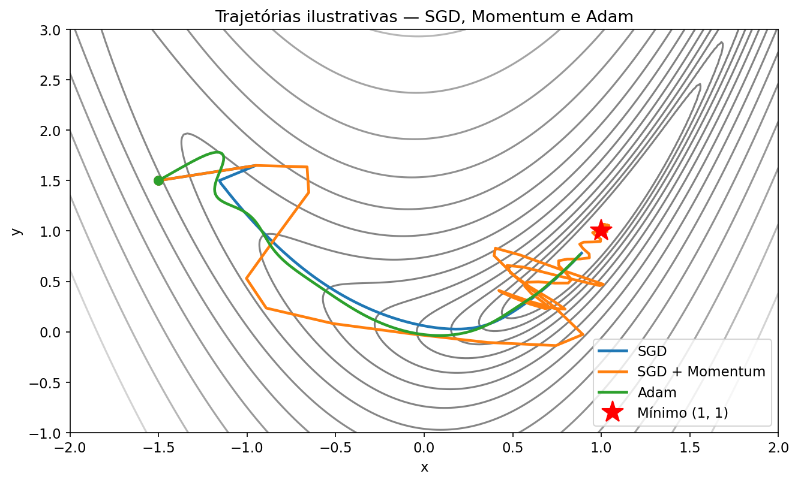
Reprodução didática das intuições do §12.4-12.6 do livro em uma superfície de Rosenbrock esticada. SGD oscila nas direções de alta curvatura; momentum suaviza; Adam adapta o tamanho do passo por-parâmetro. Os três convergem, mas gastam “caminhos” bem diferentes. O código que gerou esta figura está em assets/ (fonte deste markdown).
Documento gerado em abril de 2026 como complemento ao PDF de leitura base do Módulo 2 (Deep Learning, MsC AI UC Boulder).
Apêndice B — Mapa de decisão de otimizadores (2026)
Um guia rápido para escolher o otimizador conforme o regime de treino.
| Regime | Recomendação 2026 | Alternativa de pesquisa |
|---|---|---|
| CV / ResNet / ViT pequeno-médio (multi-época) | SGD + momentum + cosine | Lion |
| Difusão / Stable-Diffusion-class | Lion | AdamW |
| LLM fine-tuning em dataset pequeno | AdamW (seguro) | Prodigy (parameter-free) |
| LLM pretraining < 1B parâmetros | AdamW ou Schedule-Free AdamW | Lion, Sophia |
| LLM pretraining ≥ 1B parâmetros | AdamW (produção) | Muon (fronteira) |
| Infraestrutura avançada, equipe grande | SOAP / DistributedShampoo | Muon + Shampoo híbrido |
Regras transversais aplicáveis em 2026:
- AdamW, não Adam. Sempre decoupled weight decay.
- Warmup sempre: 1–10% dos passos, linear de 0 a .
- Gradient clipping:
clip_grad_norm_commax_norm=1.0. - bf16 default: precisão mista é padrão; do Adam passa para 1e-7.
- Weight decay , excluindo biases e ganhos de normalização.
- Schedule: cosine-a-10% continua aceitável, mas WSD/D2Z/Schedule-Free são superiores.
Apêndice C — Glossário bilíngue
Termos-chave ordenados alfabeticamente, com tradução e equivalente técnico.
- AdamW — Adam com decoupled weight decay. Default para transformers desde ~2019.
- bfloat16 / bf16 — Formato de ponto flutuante de 16 bits com 8 bits de expoente e 7 de mantissa; default em LLM training por ter intervalo dinâmico amplo.
- bias-variance trade-off — Compromisso viés-variância; sob interpretação clássica, uma curva em U entre complexidade do modelo e erro de teste. Substituído por double descent no regime sobreparametrizado.
- Chinchilla-optimal — Regime compute-optimal de Hoffmann et al. (2022) onde parâmetros e tokens escalam na mesma proporção (~20 tokens/parâmetro). Hoje superado por regimes inference-aware com muito mais tokens por parâmetro.
- D2Z (Decay-to-Zero) — Schedule linear que decai a LR até zero; Bergsma et al. 2025.
- Decoupled weight decay — Decaimento de pesos aplicado fora do passo adaptativo (a diferença AdamW × Adam).
- Double descent — Curva não-monotônica de test error × capacidade do modelo, com pico no threshold de interpolação e segunda descida em regime sobreparametrizado.
- DropPath / Stochastic Depth — Variante estruturada de dropout que “droppa” blocos residuais inteiros; padrão em ViTs.
- Edge of Stability (EoS) — Regime em que o maior autovalor do Hessiano oscila perto de ; não converge no sentido clássico mas generaliza bem.
- Grokking — Fenômeno de generalização tardia abrupta após plateau longo em validation.
- Lion (EvoLved Sign Momentum) — Otimizador descoberto por busca simbólica; Chen et al. 2023.
- Muon (Momentum Orthogonalized) — Otimizador que aplica Newton-Schulz para ortogonalizar o momentum antes do update; usado no Kimi K2 trilionário.
- Newton-Schulz — Iteração polinomial para aproximar a matriz ortogonal mais próxima; estável em bf16.
- Schedule-Free — Classe de otimizadores que elimina a necessidade de schedule de LR via Polyak-Ruppert averaging.
- Sophia — Otimizador de segunda ordem que usa estimativa diagonal da Hessiana.
- SAM (Sharpness-Aware Minimization) — Otimizador que minimiza a loss na vizinhança dos parâmetros para buscar mínimos planos.
- Scaling laws — Leis empíricas que relacionam loss a compute, parâmetros e dados.
- Warmup — Fase inicial de aumento linear da LR de 0 a , universal em LLMs.
- WSD (Warmup-Stable-Decay) — Schedule de três fases popularizado em 2024.
Referências completas
Papers seminais (novos otimizadores e atualizações teóricas)
- Loshchilov & Hutter (2019). Decoupled Weight Decay Regularization (AdamW). arXiv:1711.05101
- Andriushchenko et al. (2024). Why Do We Need Weight Decay in Modern Deep Learning? NeurIPS 2024. Paper PDF · código
- Wang et al. (2024). How to set AdamW’s weight decay as you scale model and dataset size. arXiv:2405.13698
- Chen et al. (2023). Symbolic Discovery of Optimization Algorithms (Lion). arXiv:2302.06675
- Liu et al. (2023). Sophia: A Scalable Stochastic Second-order Optimizer for LLM Pre-training. ICLR 2024. arXiv:2305.14342
- Jordan et al. (2024). Muon: An optimizer for hidden layers. Blog post canônico · GitHub
- Liu et al. (2025). Muon is Scalable for LLM Training (Moonshot AI). arXiv:2502.16982 · Moonlight code
- Vyas et al. (2024). SOAP: Improving and Stabilizing Shampoo using Adam. arXiv:2409.11321
- Defazio et al. (2024). The Road Less Scheduled (Schedule-Free). NeurIPS 2024. arXiv:2405.15682 · GitHub
- Mishchenko & Defazio (2024). Prodigy: An Expeditiously Adaptive Parameter-Free Learner. ICML 2024. OpenReview · GitHub
Scaling laws
- Hoffmann et al. (2022). Training Compute-Optimal LLMs (Chinchilla). arXiv:2203.15556
- Sardana et al. (2024). Beyond Chinchilla-Optimal: Accounting for Inference in LM Scaling Laws. arXiv:2401.00448
Generalização moderna
- Nanda et al. (2023). Explaining Grokking through Circuit Efficiency. arXiv:2309.02390
- Wu & Su (2023). The Implicit Regularization of Dynamical Stability in SGD. ICML 2023. arXiv:2305.17490
- Clare Lyle (2025). What’s grokking good for? blog
- Li et al. (2024). Friendly Sharpness-Aware Minimization. CVPR 2024. Paper PDF
Learning-rate scheduling
- Hägele et al. (2024). Understanding Warmup-Stable-Decay Learning Rates. arXiv:2410.05192
- Bergsma et al. (2025). Why linearly decaying the learning rate to zero works best. arXiv:2502.15938
Dropout em LLMs
- Kristensen et al. (2025). Drop Dropout on Single-Epoch Language Model Pretraining. Findings of ACL 2025. arXiv:2505.24788
- Zhao et al. (2024). Revisiting Structured Dropout. PMLR
- Lan et al. (2025). AttentionDrop. arXiv:2504.12088
Recursos interativos e didáticos
Colofão
Este ebook foi compilado em abril de 2026 a partir de três fontes:
modulo_2_leitura_base_concatenada.pdf— excertos do livro Dive into Deep Learning (Zhang, Lipton, Li, Smola), disponível em d2l.ai sob licença CC BY-SA 4.0.atualizacoes_otimizacao_2023_2026.md— documento editorial em português preparado para o MsC AI · UC Boulder.- Conteúdo dos papers da Parte II, resumido pelo editor a partir das fontes primárias linkadas em cada capítulo.
A tipografia é Charter (corpo), Inter (títulos) e Fira Code (código). As equações renderizam em MathML para compatibilidade com leitores modernos. O CSS foi ajustado para legibilidade prolongada, com variante dark-mode automática em leitores que honram prefers-color-scheme.
Boa leitura — e bom estudo.